[!IMPORTANT] Mundo 1 · Primeiros passos · Rota do jogo: etapa 1 de 29
Missão: compilar o primeiro programa, guardar valores em variáveis e mostrar resultados.
Vem de: o começo da rota. Segue para: Módulo 02 · Decisões.
Checkpoints desta fase:
- Ler os assuntos 0001 a 0011 e refazer os exemplos
- Resolver os 4 exercícios de cada assunto, escrevendo o código sozinho
- Fechar a lista prática (P0101 a P0130)
- Enfrentar os desafios do módulo
- Chefão: resolver as questões de prova do módulo sem consultar
Um algoritmo é uma sequência finita de passos sem ambiguidade; um programa
é um algoritmo escrito em C. Este módulo cobre a estrutura sequencial:
variáveis, tipos e limites, constantes, printf, scanf, aritmética,
conversões e math.h, no modelo entrada → processamento → saída. É o ponto de
partida e não depende de nenhum módulo; o 02 e o 03 constroem sobre ele.
.c ao executávelint, float, double, char e sizeof#define, const), literais e sequências de escapeprintf (largura, precisão, alinhamento) e scanf (o &, o %lf, o buffer)++ e --math.h: pow, sqrt, round, floor, ceil, fabsVocê precisa do gcc e, para os módulos de memória, do gdb e do
valgrind. As resoluções ficam em _respostas/01-fundamentos/.
Arch Linux (e derivados, como Manjaro e EndeavourOS):
sudo pacman -S --needed base-devel gdb valgrind
Debian / Ubuntu (e derivados, como Mint e Pop!_OS):
sudo apt install build-essential gdb valgrind
Windows: use o WSL com Ubuntu (wsl --install no PowerShell como
administrador, reinicie e use o comando do Debian/Ubuntu). Clone o curso
dentro do Linux do WSL (~/LPEDC).
Confira com gcc --version. Para compilar e rodar um arquivo do curso:
gcc ~/LPEDC/material/A001.c -o ~/LPEDC/material/A001 && ~/LPEDC/material/A001
O -o dá o nome do executável. Acrescente antes dele as flags de estudo,
-std=c17 -Wall -Wextra -pedantic -g -fsanitize=address,undefined -lm: padrão
C17, todos os avisos, o AddressSanitizer (erros de memória), o detector de
comportamento indefinido e a biblioteca matemática. Os avisos citados nos
módulos aparecem com elas, e os exercícios devem compilar sem nenhum aviso.
Para testar sem digitar, use um cano (|): o que vem antes vira o teclado do
programa.
gcc ~/LPEDC/material/A011.c -o ~/LPEDC/material/A011 && printf '3 4.99\n2\n' | ~/LPEDC/material/A011
[!NOTE] Material antigo de C usa
void main,conio.h,getch(),system("pause"),fflush(stdin)egets. Nada disso é C padrão ou seguro; quando aparecer, o curso mostra a alternativa.
| # | Assunto |
|---|---|
| 0001 | O primeiro programa |
| 0002 | Variáveis |
| 0003 | Tipos e limites |
| 0004 | Constantes |
| 0005 | printf |
| 0006 | scanf |
| 0007 | Aritmética |
| 0008 | Conversão e cast |
| 0009 | Atribuição, ++ e -- |
| 0010 | math.h |
| 0011 | Juntando tudo |
[!NOTE] Cada assunto é um capítulo: Conceito (a explicação), Exemplos de uso (programas que compilam sozinhos: rode com o comando abaixo de cada um e compare com a saída no fim do código) e Exercícios (cada um é um arquivo em
material/com o esqueleto, as dicas e o espaço para a resposta; resoluções em_respostas/01-fundamentos/).
O processador do computador só entende números: sequências de instruções
em binário, cada uma muito simples. Escrever assim seria impossível para
qualquer pessoa. Um programa em C é um texto que você consegue ler e
escrever, e uma ferramenta, o compilador, traduz esse texto para a
língua da máquina. O curso inteiro parte daqui: um arquivo .c que vira um
executável e mostra alguma coisa na tela.
Pense numa receita de bolo. Ela tem um título, uma lista do que você precisa
ter à mão e os passos, que você segue de cima para baixo. Um programa em C
tem as mesmas partes. Ele é um conjunto de funções, blocos de
instruções com nome, e a execução sempre começa pela função main
(KERNIGHAN; RITCHIE, 1988, cap. 1). O sistema operacional procura a main,
entra nela e executa as instruções na ordem em que aparecem.
#include <stdio.h>
int main(void) {
printf("Bom dia\n");
return 0;
}
Cada instrução é um comando completo e termina com ponto e vírgula. As
chaves { } agrupam várias instruções num bloco, que funciona como
uma unidade: tudo o que está entre a { depois de main(void) e a } final
pertence à main (DEITEL; DEITEL, 2011, cap. 2). A linha
int main(void) diz duas coisas: a função não recebe nada de fora (void)
e devolve um número inteiro (int) para quem a chamou.
A primeira linha não é instrução. Tudo o que começa com # é uma ordem para
o pré-processador, a primeira etapa da tradução, e por isso não leva
;. O #include <stdio.h> manda colar ali o conteúdo do arquivo
stdio.h, que declara as funções de entrada e saída, entre elas o printf
(BACKES, 2013, cap. 1). Sem essa linha, o compilador não sabe que o
printf existe nem como chamá-lo.
O printf("...\n") mostra o texto entre aspas. O \n dentro das aspas é
um caractere especial que pula para a linha de baixo. O return 0 encerra
a main e entrega o número 0 ao sistema, o código combinado para "terminou
bem" (BACKES, 2013, cap. 1). Um valor diferente de zero avisa que algo deu
errado.
Também cabe no arquivo texto que não é para a máquina. O comentário é
ignorado pelo compilador e serve só para quem lê. O // comenta até o fim
da linha; o par /* ... */ comenta tudo o que fica entre eles, mesmo em
várias linhas (DEITEL; DEITEL, 2011, cap. 2). E o C diferencia maiúsculas de
minúsculas: Main e Printf são nomes que não existem.
| Linha | Para que serve |
|---|---|
#include <stdio.h> |
declara o printf |
int main(void) { |
começa a main; não recebe nada e devolve um int |
printf("...\n"); |
mostra texto; \n pula a linha |
return 0; |
termina com sucesso |
} |
fecha o bloco |
Para o texto virar executável, o gcc passa por quatro etapas, uma depois
da outra (GNU, s.d.). O pré-processador trata as linhas com # e cola
o stdio.h no lugar do #include. O compilador confere a gramática e
os tipos e traduz o C para assembly, as instruções do processador
escritas como texto. O montador transforma o assembly em código
objeto (.o), já em binário, mas incompleto: ele sabe que você chamou o
printf, não onde o printf está. O ligador (linker) junta o .o
com a biblioteca padrão, onde mora o código do printf, e grava o
executável. Um comando faz tudo: gcc padaria.c -o padaria, e depois
./padaria roda o resultado.
Saber em que etapa o processo parou ajuda a consertar. Há três tipos de erro
(DEITEL; DEITEL, 2011, cap. 2). O erro de compilação aparece quando o
texto fere a gramática, como faltar um ; ou escrever Int no lugar de
int: o gcc mostra arquivo, linha e coluna e não gera executável. O erro
de ligação aparece quando a gramática está certa, mas a função não existe
em lugar nenhum: com prinft, o ligador para com undefined reference to 'prinft'. O erro de execução é o pior, porque o programa compila,
roda e mostra um valor errado ou quebra no meio. O compilador não o vê; os
avisos (warnings) do gcc com -Wall e o AddressSanitizer pegam parte
deles.
[!WARNING] O
printfnão pula linha sozinho:printf("Pão"); printf("Quente");mostraPãoQuente. Ponha o\nonde a linha acaba. Se faltar um;, o gcc reclama (expected ';' before ...) na linha seguinte, onde ele percebe a falta.
Um aviso de três linhas para o painel de LED de uma padaria. O padaria.c
passa pelas quatro etapas até virar o executável:
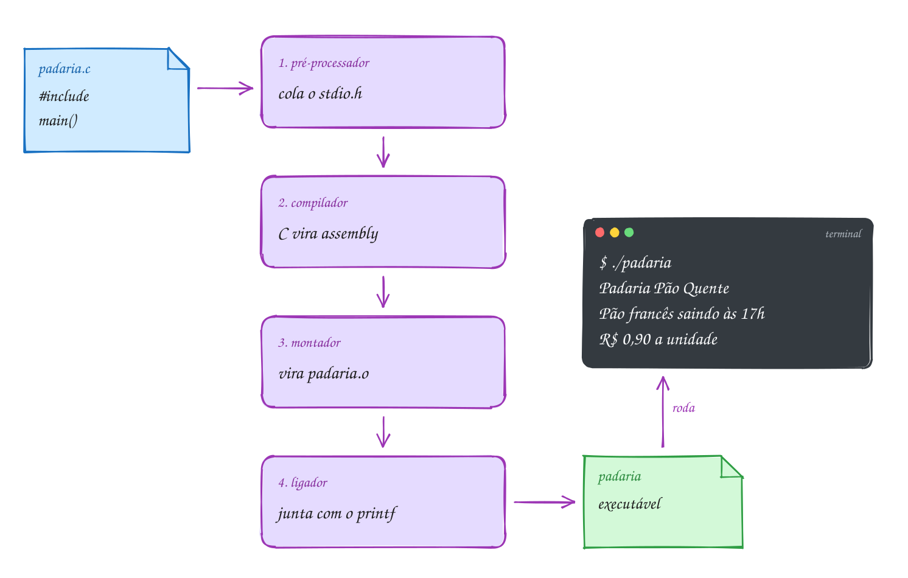
// Aviso do painel da padaria
#include <stdio.h>
int main(void) {
printf("Padaria Pão Quente\n");
printf("Pão francês saindo às 17h\n");
printf("R$ 0,90 a unidade\n");
return 0; // 0 = terminou bem
}
// Saída:
// Padaria Pão Quente
// Pão francês saindo às 17h
// R$ 0,90 a unidade
Cada etapa pode parar o processo; aqui todas passam:
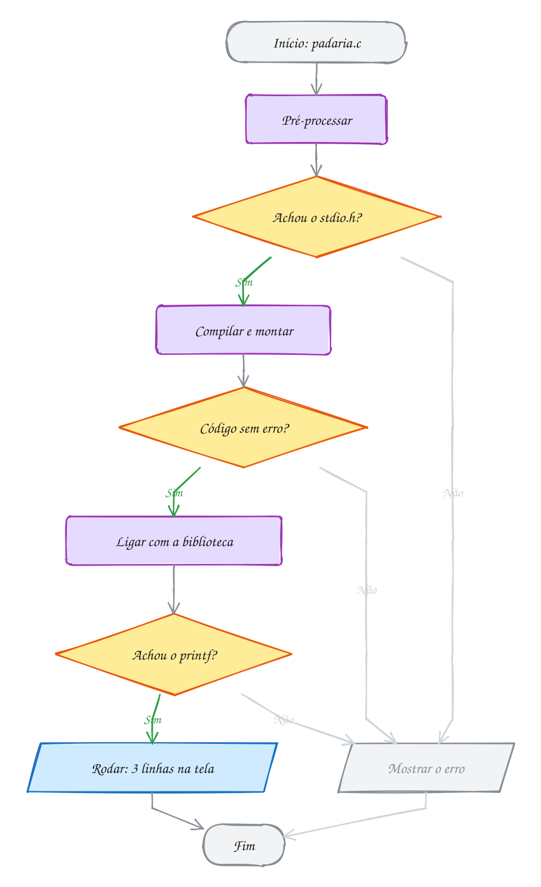
Exemplo A001 · Quem separa as instruções é o ponto e vírgula
/*
Para o compilador, quebra de linha, espaço e recuo são só enfeite.
O que termina uma instrução é o ; e o que agrupa é o par de chaves.
*/
#include <stdio.h>
int main(void) {
// duas instruções na mesma linha: o ; separa uma da outra
printf("Banca do Seu Zé\n"); printf("Frutas e verduras\n");
// uma instrução espalhada em três linhas: ela só acaba no ;
printf(
"Abacaxi: R$ 7,00\n"
);
printf("\n"); // um printf só com \n deixa uma linha em branco
printf("Banana: R$ 5,50 a dúzia\n"); /* comentário de bloco no fim */
printf(/* comentário até no meio */ "Laranja: R$ 4,00 o kg\n");
return 0;
}
// Saída:
// Banca do Seu Zé
// Frutas e verduras
// Abacaxi: R$ 7,00
//
// Banana: R$ 5,50 a dúzia
// Laranja: R$ 4,00 o kg
//
// O recuo de 4 espaços também é só para quem lê: apague todos e rode de
// novo. A saída é a mesma. Agora apague o ; do primeiro printf e veja o gcc
// reclamar do printf seguinte, que está na mesma linha.
gcc ~/LPEDC/material/A001.c -o ~/LPEDC/material/A001 && ~/LPEDC/material/A001
Exemplo A002 · Um printf, várias linhas (e vários printf, uma linha)
#include <stdio.h>
/*
Comentário de bloco: pode ocupar várias linhas.
Bom para explicar o que o programa faz, no topo do arquivo.
*/
int main(void) {
// três printf montando UMA linha: sem \n, o cursor fica onde parou
printf("Cardápio: ");
printf("café, ");
printf("pão na chapa\n");
// um printf só montando TRÊS linhas: cada \n pula uma
printf("Café: R$ 4,50\nPão na chapa: R$ 6,00\nPingado: R$ 5,00\n");
// dois textos entre aspas lado a lado viram um só (útil para linhas longas)
printf("Aberto de segunda a sábado, "
"das 6h às 20h\n");
// printf("Esta linha nunca aparece: está comentada\n");
return 0;
}
// Saída:
// Cardápio: café, pão na chapa
// Café: R$ 4,50
// Pão na chapa: R$ 6,00
// Pingado: R$ 5,00
// Aberto de segunda a sábado, das 6h às 20h
//
// Depois de rodar, digite "echo $?" no terminal: aparece 0, o valor do return.
gcc ~/LPEDC/material/A002.c -o ~/LPEDC/material/A002 && ~/LPEDC/material/A002
Exercício E001 · ★☆☆
Escreva um programa que mostre o letreiro do ônibus, exatamente assim. Rode de dois jeitos: com o rodar e na mão, com gcc, gerando um executável chamado "letreiro".
Saída esperada:
Linha 077 - Terminal Centro
Via Av. Brasil
Tarifa: R$ 4,90
Exercício E003 · ★★☆
Escreva do zero o programa do aviso da farmácia: um comentário de bloco (/* ... */) no topo com o texto "Aviso da farmácia", o #include necessário e a main, que mostra as duas linhas abaixo e termina com return 0.
Saída esperada:
Farmácia aberta 24h
Plantão: (11) 5555-0199
Exercício E004 · ★★☆
Escreva o aviso do cinema com o código bem organizado: um comentário de bloco no topo dizendo o que o programa faz, uma instrução por linha, recuo de 4 espaços dentro da main e um comentário // sala 2 no fim da linha do printf da sessão. O programa mostra as três linhas abaixo.
Saída esperada:
Cine Estação
Sessão: 19h30 (sala 2)
Ingresso: R$ 28,00
Exercício E005 · ★★★
Escreva o programa de um backup que FALHOU: ele mostra as duas linhas abaixo e devolve o código 2 ao sistema com o return da main. Rode de dentro desta pasta e confira as três linhas da saída esperada:
~/LPEDC/rodar E005.c; echo "código: $?"
Saída esperada:
Backup falhou: disco cheio
Código de saída: 2
código: 2
O primeiro programa só mostrava texto fixo. Para fazer conta, o programa precisa guardar números em algum lugar enquanto trabalha: a idade de alguém, o preço de um produto, o total de uma compra. Esse lugar é a memória do computador, e a variável é a forma de usar um pedaço dela pelo nome.
Pense na ficha de matrícula de uma academia. Ela tem campos com rótulo (idade, altura, peso, plano), e cada campo aceita um tipo de informação. Um mês depois, a recepcionista apaga o peso e escreve o novo. A ficha continua a mesma; só o conteúdo de um campo mudou. Uma variável é um campo dessa ficha: um lugar na memória com nome, tipo e valor, e esse valor pode mudar durante a execução (DEITEL; DEITEL, 2011, cap. 2).
O nome é para você, que escreve e lê o código. A máquina usa outra coisa: o
endereço, o número do primeiro byte que o valor ocupa na memória. Você
vê o endereço de uma variável com &, e o printf o mostra com %p. Por
enquanto o endereço é só curiosidade; no módulo de ponteiros ele vira
ferramenta.
O tipo diz quantos bytes a variável ocupa e como ler esses bytes (BACKES, 2013). Ele vem antes do nome e não muda depois. Os mesmos quatro bytes podem ser lidos como um inteiro ou como um real, e o resultado é completamente diferente; o tipo é que decide. A tabela mostra os quatro tipos básicos, com os tamanhos de um PC de 64 bits (o padrão do C só garante mínimos, assunto do 0003):
| Tipo | Guarda | Tamanho típico | printf |
|---|---|---|---|
int |
inteiro | 4 bytes | %d |
float |
real, uns 7 dígitos | 4 bytes | %f |
double |
real, uns 15 dígitos | 8 bytes | %f |
char |
um caractere | 1 byte | %c |
Esses são os tipos primitivos, também chamados de tipos simples: cada
variável guarda um valor só. Vetores e structs juntam vários valores numa
variável e são os tipos compostos, que aparecem nos módulos 05 e 08
(CELES; CERQUEIRA; RANGEL, 2016). Repare que o char também guarda um
número, pequeno: a letra 'B' fica na memória como o código 66.
Criar a variável é declarar: int idade; reserva quatro bytes e dá a
eles o nome idade. Dar o primeiro valor no mesmo comando é
inicializar: int idade = 25; (BACKES, 2013). As duas coisas parecem
iguais, mas não são. Uma variável declarada sem valor fica com o que já
estava naqueles bytes, e isso pode ser qualquer número.
int idade = 25; // declara e inicializa
double peso = 72.5; // o decimal do C é o ponto
peso = 71.8; // atribui: o 72.5 some
Atribuir é guardar um valor novo, com =, numa variável que já existe.
O valor antigo é apagado para sempre; não há histórico. Ler a variável, por
outro lado, não muda nada: você pode mostrar peso mil vezes e ele continua
71.8 (DEITEL; DEITEL, 2011, cap. 2).
Para saber quanto cada tipo ocupa na sua máquina, existe o operador
sizeof. Ele dá o tamanho em bytes de um tipo ou de uma variável:
sizeof(double) vale 8 num PC comum. O resultado tem um tipo próprio, e o
printf o mostra com %zu (KERNIGHAN; RITCHIE, 1988, cap. 2).
O nome da variável segue regras. Ele usa letras, dígitos e _, não começa
por dígito e não leva acento nem espaço. Palavras do próprio C, como int
e return, são reservadas e não servem de nome. E maiúscula conta: peso
e Peso são duas variáveis diferentes (KERNIGHAN; RITCHIE, 1988, cap. 2).
O curso usa snake_case, palavras em minúscula ligadas por _:
peso_atual, valor_total.
[!WARNING] Variável sem valor não vale zero: vale lixo, o que já estava na memória.
int total; printf("%d", total);pode mostrar 0, 32767 ou -1294, e o gcc avisa'total' is used uninitialized. Inicialize sempre. E o decimal do C é o ponto:72,5nem compila.
A ficha de uma academia: idade, altura, peso e plano. Cada dado vira uma caixinha com tipo, tamanho e endereço; depois o peso recebe um valor novo:
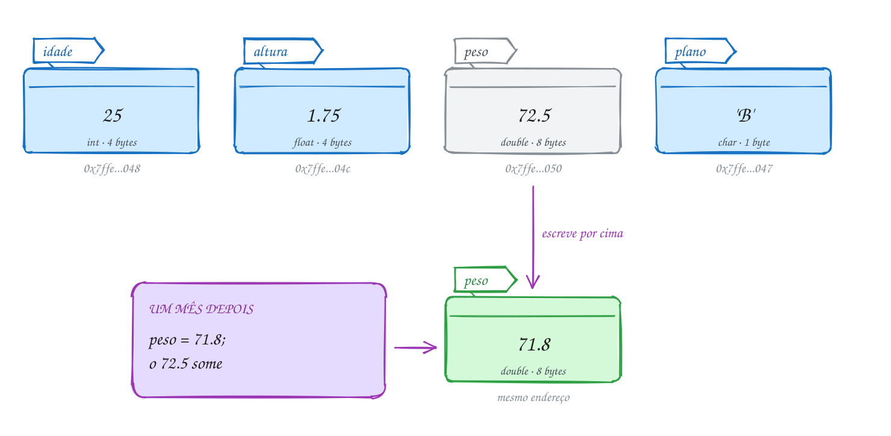
#include <stdio.h>
int main(void) {
int idade = 25; // inteiro
float altura = 1.75; // real com uns 7 dígitos
double peso = 72.5; // real com uns 15 dígitos
char plano = 'B'; // um caractere, entre aspas simples
printf("Idade: %d anos\n", idade);
printf("Altura: %.2f m\n", altura);
printf("Peso: %.1f kg\n", peso);
printf("Plano: %c\n", plano);
peso = 71.8; // um mês depois: o 72.5 some
printf("Peso novo: %.1f kg\n", peso);
printf("Bytes: %zu, %zu, %zu, %zu\n",
sizeof idade, sizeof altura, sizeof peso, sizeof plano);
return 0;
}
// Saída:
// Idade: 25 anos
// Altura: 1.75 m
// Peso: 72.5 kg
// Plano: B
// Peso novo: 71.8 kg
// Bytes: 4, 4, 8, 1
O caminho é sequência pura: criar as variáveis e depois trocar o peso.
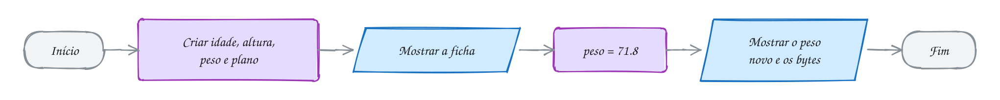
Exemplo A003 · A cópia que não acompanha e o float que arredonda
#include <stdio.h>
int main(void) {
// = copia o VALOR: depois disso, as duas variáveis seguem separadas
int pao_manha = 40;
int pao_tarde = pao_manha; // a tarde começa com uma cópia: 40
pao_manha = 25; // mudar uma não mexe na outra
printf("Pães de manhã: %d, de tarde: %d\n", pao_manha, pao_tarde);
// várias variáveis do mesmo tipo numa linha, separadas por vírgula
char fila = 'C', caixa = '3';
printf("Fila %c, caixa %c\n", fila, caixa);
// o float guarda uns 7 dígitos; o double, uns 15
float premio_float = 12345678.9;
double premio_double = 12345678.9;
printf("Prêmio no float: %.1f\n", premio_float);
printf("Prêmio no double: %.1f\n", premio_double);
return 0;
}
// Saída:
// Pães de manhã: 25, de tarde: 40
// Fila C, caixa 3
// Prêmio no float: 12345679.0
// Prêmio no double: 12345678.9
//
// O 12345678.9 tem 9 dígitos: o float não dá conta e guarda o valor mais
// perto que ele consegue representar. Dinheiro e medidas: use double.
gcc ~/LPEDC/material/A003.c -o ~/LPEDC/material/A003 && ~/LPEDC/material/A003
Exemplo A004 · Onde moram as variáveis
#include <stdio.h>
// Cada variável ocupa alguns bytes seguidos da memória. O endereço (&nome)
// é o número do primeiro desses bytes. O %p mostra endereços em hexadecimal.
int main(void) {
char plano = 'B';
int idade = 25;
double peso = 72.5;
printf("plano: %zu byte em %p\n", sizeof plano, (void *)&plano);
printf("idade: %zu bytes em %p\n", sizeof idade, (void *)&idade);
printf("peso: %zu bytes em %p\n", sizeof peso, (void *)&peso);
printf("int: %zu, float: %zu, double: %zu, char: %zu\n",
sizeof(int), sizeof(float), sizeof(double), sizeof(char));
return 0;
}
// Saída (os endereços mudam a cada execução):
// plano: 1 byte em 0x7f2e53c00020
// idade: 4 bytes em 0x7f2e53c00030
// peso: 8 bytes em 0x7f2e53c00040
// int: 4, float: 4, double: 8, char: 1
//
// Com o rodar, o AddressSanitizer deixa uma folga entre as variáveis para
// flagrar quem escreve fora do lugar. Sem ele, elas ficam coladas:
// gcc A004.c -o a && ./a
// plano: 1 byte em 0x7ffccb532f1b
// idade: 4 bytes em 0x7ffccb532f1c (logo depois do plano)
// peso: 8 bytes em 0x7ffccb532f20 (4 bytes depois da idade)
gcc ~/LPEDC/material/A004.c -o ~/LPEDC/material/A004 && ~/LPEDC/material/A004
Exercício E007 · ★☆☆
No mercado, a etiqueta de um produto tem: código 1042, preço R$ 8.99, peso 0.5 kg e setor 'H' (hortifrúti). Crie uma variável para cada dado, com o tipo certo, e mostre a etiqueta:
Saída esperada:
Código: 1042
Preço: R$ 8.99
Peso: 0.5 kg
Setor: H
Exercício E009 · ★★☆
O cadastro de um aluno da autoescola guarda: idade (int, 19), nota da prova teórica (double, 8.5), nota da prova prática (double, 9.0), categoria da CNH (char, 'B') e número de aulas feitas (int, 20). Declare as cinco variáveis e mostre os valores e o sizeof de cada uma, uma por linha. Depois, mostre mais duas linhas, calculadas pelo programa: o total de bytes das cinco variáveis (somando os sizeof) e quanto seria o total se as duas notas fossem float (use sizeof(float) no lugar delas).
Saída esperada:
idade: 19 (4 bytes)
teorica: 8.5 (8 bytes)
pratica: 9.0 (8 bytes)
categoria: B (1 byte)
aulas: 20 (4 bytes)
total: 25 bytes
com float nas notas: 17 bytes
Exercício E010 · ★★☆
O placar eletrônico foi digitado invertido: casa = 1 e visitante = 3, e o certo é Casa 3 x 1 Visitante. Escreva um programa com as duas variáveis (int) que troque os valores usando uma variável auxiliar e mostre o placar certo.
Saída esperada:
Casa 3 x 1 Visitante
Exercício E012 · ★★★
Para o C, um char é só um número pequeno: o %c mostra o símbolo que tem aquele código, e o %d mostra o próprio código. Escreva um programa que mostre as linhas abaixo usando UMA variável char, que você vai reaproveitando (declara uma vez e troca o valor). As regras:
vez com %c e outra com %d;
com %d.
Saída esperada:
A 65
B
7 55
[ ] 32
'7' vale 55, 7 vale 7
Toda variável tem um tamanho fixo, e um tamanho fixo tem um teto. Se o número que você quer guardar não cabe, o C não aumenta a variável: ele guarda só o pedaço que cabe e segue em frente, muitas vezes sem avisar. Para escolher o tipo certo, você precisa saber como o número fica na memória e até onde cada tipo vai.
Pense no odômetro de um carro antigo, com cinco rodinhas de 0 a 9. Ele mede até 99.999 km. No quilômetro seguinte, todas as rodinhas voltam a zero e o painel mostra 00000. O carro andou, mas o mostrador não tem casa para o número novo. A memória do computador funciona do mesmo jeito, só que as rodinhas têm duas posições em vez de dez.
Cada rodinha é um bit, uma chave que vale 0 ou 1. Oito bits formam um
byte. Com n bits cabem 2ⁿ combinações diferentes, então um byte guarda
256 valores, de 0 a 255 (FEOFILOFF, 2009, ap. C). Dois bytes guardam 65.536
valores; quatro bytes, mais de 4 bilhões.
O inteiro fica na memória em binário, a base 2. Na base 10, cada casa
vale dez vezes a casa da direita (unidade, dezena, centena). Na base 2, cada
casa vale o dobro da casa da direita: 1, 2, 4, 8, 16, 32, 64, 128. Para
ler um binário, some as casas que têm 1: 00001101 é 8 + 4 + 1 = 13
(FEOFILOFF, 2009, ap. C). Com os oito bits ligados, 11111111, a soma dá
255, o maior valor de um byte.
| casa | 2⁷ | 2⁶ | 2⁵ | 2⁴ | 2³ | 2² | 2¹ | 2⁰ |
|---|---|---|---|---|---|---|---|---|
| vale | 128 | 64 | 32 | 16 | 8 | 4 | 2 | 1 |
Escrever binário cansa, então se usa uma abreviação: o hexadecimal, a
base 16. Os dígitos vão de 0 a 9 e depois de A (10) a F (15). Cada dígito
hexa equivale a exatamente 4 bits, e um byte cabe em dois dígitos:
1111 1111 é FF. No C, um número em hexadecimal começa com 0x, e
0xFF vale 255 (DEITEL; DEITEL, 2011).
E os negativos? O C guarda os inteiros com sinal em complemento de dois:
o bit mais à esquerda pesa negativo. Num byte, ele vale -128 em vez de +128.
Assim, 10000000 é -128 e 11111111 é -128 + 127 = -1 (FEOFILOFF, 2009,
ap. C). Isso explica por que a faixa é assimétrica: há um negativo a mais,
-128 a 127. E mostra que o mesmo byte 0xFF vale 255 num unsigned char e
-1 num char. Os bits são iguais; o tipo decide como lê-los.
O tamanho do tipo decide a sua faixa, o menor e o maior valor que ele
guarda. Os modificadores ajustam o int: short usa menos bytes,
long e long long usam mais, e unsigned troca os negativos por mais
positivos, quase o dobro (BACKES, 2013). Sem modificador o tipo tem sinal:
int e signed int são o mesmo tipo. Num PC Linux de 64 bits:
| Tipo (PC Linux 64 bits) | Bytes | Faixa |
|---|---|---|
char |
1 | -128 a 127 |
unsigned char |
1 | 0 a 255 |
short |
2 | -32.768 a 32.767 |
unsigned short |
2 | 0 a 65.535 |
int |
4 | cerca de ±2,1 bilhões |
long / long long |
8 | cerca de ±9,2 quintilhões |
Esses números valem para essa máquina, não para todas. O padrão do C só
garante tamanhos mínimos: o int pode ter 2 bytes num
microcontrolador, e o long tem 4 bytes no Windows. Por isso existem dois
cabeçalhos (ISO/IEC, 2018). O <limits.h> traz os limites reais da
máquina em que o programa compila, como INT_MAX e USHRT_MAX. O
<stdint.h> traz tipos com o tamanho exato no nome: int8_t,
uint16_t, int32_t, int64_t.
Passar do limite do tipo se chama overflow, ou estouro. Num tipo
unsigned, o C garante o comportamento do odômetro: o valor dá a volta e
recomeça do zero. Um unsigned short em 65.535 tem os 16 bits ligados;
somar 1 pede um 17º bit, que não existe, e o resultado vira 0. Num tipo com
sinal, o padrão não promete nada: o estouro é comportamento indefinido,
e o programa pode fazer qualquer coisa (ISO/IEC, 2018).
[!WARNING] Estouro em tipo com sinal não dá a volta com garantia:
int x = INT_MAX; x = x + 1;é comportamento indefinido. Costuma virar -2147483648, mas não conte com isso. Com as flags de estudo, o gcc acusasigned integer overflow. Escolha um tipo que caiba.
A catraca de um estádio conta torcedores num unsigned short (16 bits). No
65.536º torcedor, o bit de cima não cabe e o painel volta a zero:
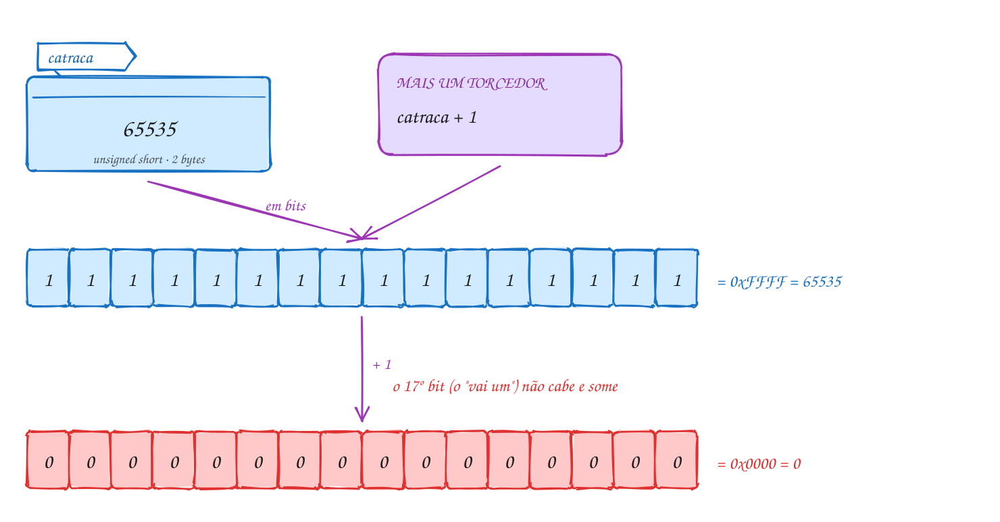
#include <stdio.h>
#include <limits.h>
int main(void) {
unsigned short catraca = 65535; // 16 bits, todos ligados
printf("Maior unsigned short: %d\n", USHRT_MAX);
printf("Catraca: %d (0x%X)\n", catraca, catraca);
catraca = catraca + 1; // 65536 não cabe em 16 bits
printf("Mais um torcedor: %d\n", catraca);
int publico = 78838; // int tem 32 bits: sobra espaço
printf("Público: %d (o int vai até %d)\n", publico, INT_MAX);
return 0;
}
// Saída:
// Maior unsigned short: 65535
// Catraca: 65535 (0xFFFF)
// Mais um torcedor: 0
// Público: 78838 (o int vai até 2147483647)
Quem decide "cabe em 16 bits?" é o hardware; se não cabe, guarda só os 16 bits de baixo, sem avisar:
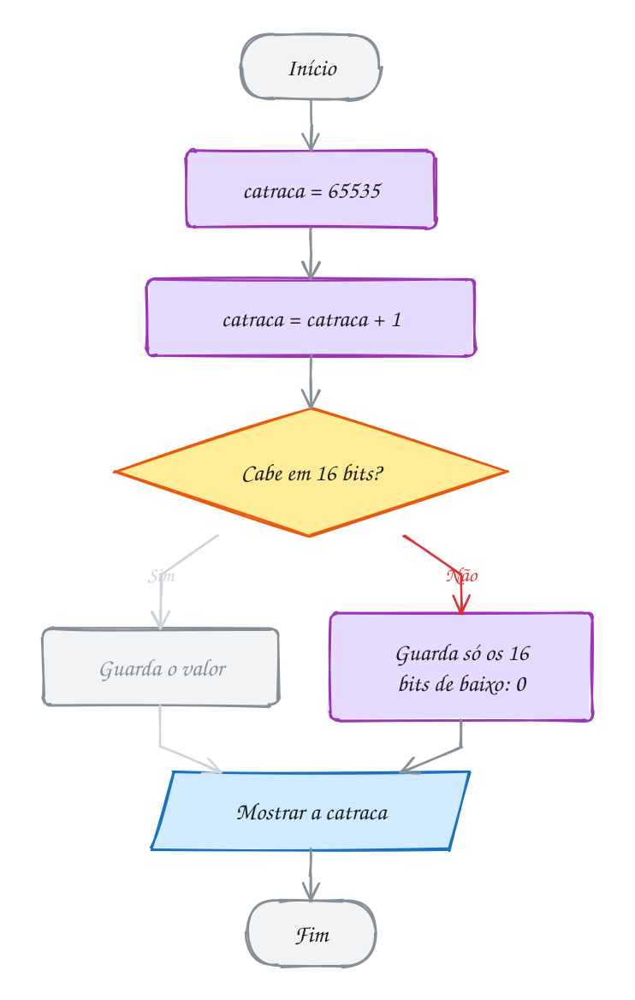
Exemplo A005 · O mesmo byte lido de dois jeitos
#include <stdio.h>
#include <stdint.h>
int main(void) {
// o freezer marca -10 °C e guarda a temperatura num byte com sinal
int8_t freezer = -10;
printf("Freezer: %d °C\n", freezer);
// o painel recebe os MESMOS 8 bits, mas lê como byte sem sinal
uint8_t byte_no_cabo = freezer;
printf("No cabo: 0x%X, que sem sinal vale %d\n", byte_no_cabo, byte_no_cabo);
// a faixa de cada um: 256 combinações nos dois, deslocadas
printf("int8_t: %d a %d\n", INT8_MIN, INT8_MAX);
printf("uint8_t: 0 a %d\n", UINT8_MAX);
// -10 e 246 completam juntos 256 (2 elevado a 8)
printf("%d + %d = %d\n", byte_no_cabo, 10, byte_no_cabo + 10);
return 0;
}
// Saída:
// Freezer: -10 °C
// No cabo: 0xF6, que sem sinal vale 246
// int8_t: -128 a 127
// uint8_t: 0 a 255
// 246 + 10 = 256
//
// Os bits são 1111 0110 nos dois casos. O tipo decide se o bit de cima
// vale +128 (sem sinal: 246) ou -128 (com sinal: -128 + 118 = -10).
gcc ~/LPEDC/material/A005.c -o ~/LPEDC/material/A005 && ~/LPEDC/material/A005
Exemplo A006 · A tabela de tamanhos e limites desta máquina
#include <stdio.h>
#include <limits.h>
#include <stdint.h>
// Cada tipo tem o seu código no printf: %d (int), %u (unsigned),
// %ld (long), %lld (long long), %llu (unsigned long long).
int main(void) {
printf("char: %zu byte, %d a %d\n", sizeof(char), CHAR_MIN, CHAR_MAX);
printf("u. char: %zu byte, 0 a %d\n", sizeof(unsigned char), UCHAR_MAX);
printf("short: %zu bytes, %d a %d\n", sizeof(short), SHRT_MIN, SHRT_MAX);
printf("int: %zu bytes, %d a %d\n", sizeof(int), INT_MIN, INT_MAX);
printf("u. int: %zu bytes, 0 a %u\n", sizeof(unsigned int), UINT_MAX);
printf("long: %zu bytes, até %ld\n", sizeof(long), LONG_MAX);
printf("long long: %zu bytes, até %lld\n", sizeof(long long), LLONG_MAX);
// stdint.h: o número de bits está no nome do tipo
printf("int8_t: %zu, uint16_t: %zu, int32_t: %zu, int64_t: %zu bytes\n",
sizeof(int8_t), sizeof(uint16_t), sizeof(int32_t), sizeof(int64_t));
printf("uint64_t vai até %llu\n", (unsigned long long)UINT64_MAX);
// hexadecimal no código: 0x na frente; cada dígito vale 4 bits
printf("0xFF = %d, 0xFFFF = %d, 0x7FFFFFFF = %d\n", 0xFF, 0xFFFF, 0x7FFFFFFF);
return 0;
}
// Saída (num PC Linux de 64 bits):
// char: 1 byte, -128 a 127
// u. char: 1 byte, 0 a 255
// short: 2 bytes, -32768 a 32767
// int: 4 bytes, -2147483648 a 2147483647
// u. int: 4 bytes, 0 a 4294967295
// long: 8 bytes, até 9223372036854775807
// long long: 8 bytes, até 9223372036854775807
// int8_t: 1, uint16_t: 2, int32_t: 4, int64_t: 8 bytes
// uint64_t vai até 18446744073709551615
// 0xFF = 255, 0xFFFF = 65535, 0x7FFFFFFF = 2147483647
gcc ~/LPEDC/material/A006.c -o ~/LPEDC/material/A006 && ~/LPEDC/material/A006
Exercício E013 · ★☆☆
Converta na mão cada binário para hexadecimal (cada grupo de 4 bits vira um dígito hexa) e escreva os números no código SÓ em hexadecimal, com 0x na frente. Quem converte para decimal é o printf, com %d. Na tabela de quantos valores cabem, use também hexa: 2 elevado a 4 é 0x10.
binários: 0001 0110 e 1111 1111; hexas prontos: 0x1F e 0x100
Saída esperada:
0001 0110 = 0x16 = 22
1111 1111 = 0xFF = 255
0x1F = 31
0x100 = 256
4 bits: 16 valores
8 bits: 256 valores
16 bits: 65536 valores
(Binário escrito como 0b10110 só virou padrão no C23; o rodar, que segue o C17, avisa se você usar.)
Exercício E015 · ★★☆
Três contadores unsigned, três estouros que dão a volta. Escreva um programa com brilho (unsigned char) = 250, estoque (unsigned int) = 0 e odometro (unsigned short) = 65000. Some 10 ao brilho, tire 1 do estoque e some 1000 ao odômetro, guardando o resultado na própria variável. Mostre uma linha por contador, com o valor de antes, a conta, o valor de depois e o máximo do tipo, tirado do limits.h.
Saída esperada:
brilho: 250 + 10 = 4 (máximo 255)
estoque: 0 - 1 = 4294967295 (máximo 4294967295)
odômetro: 65000 + 1000 = 464 (máximo 65535)
Exercício E016 · ★★☆
De quantas maneiras 13 corredores podem cruzar a linha de chegada? É 13! (13 fatorial = 1 * 2 * ... * 13). Escreva um programa que guarde 12! = 479001600 numa variável, multiplique por 13 e mostre o resultado. O resultado passa do limite do int, então escolha o tipo que comporta.
Saída esperada:
13! = 6227020800 maneiras
Exercício E017 · ★★★
Muitos sistemas guardam a hora como "segundos desde 1/1/1970" num inteiro de 32 bits com sinal. Esse contador estoura em 19/01/2038. Escreva um programa que mostre por quê: o maior int32_t, quantos segundos têm 68 e 69 anos (de 365 dias) e o maior int64_t. Compare os números: 1970 + 68 = 2038, e o contador de 32 bits não aguenta chegar aos 69 anos.
Saída esperada:
int32_t vai até 2147483647
68 anos: 2144448000 segundos
69 anos: 2175984000 segundos
int64_t vai até 9223372036854775807
Imagine a tarifa do ônibus escrita à mão em dez lugares do sistema: no letreiro, no cálculo de ida e volta, no recibo, no relatório. Em janeiro ela sobe de R$ 4,40 para R$ 4,90, e alguém precisa caçar os dez lugares. Se esquecer um, o recibo mostra um preço e o relatório outro. O jeito certo é escrever o valor uma vez só, com um nome, e usar o nome no resto do código.
Antes de dar nome a um valor, repare em como você o escreve. Todo valor
escrito direto no código é um literal, e o jeito de escrever decide o
tipo dele: 101 é int, 4.90 é double e 4.90f é float
(BACKES, 2013, cap. 2). Isso importa porque o tipo do literal entra nas
contas. Sem nenhuma marca, todo número com ponto é double; o sufixo f
pede um float.
Os inteiros também aceitam marcas. Os sufixos L, LL e U pedem long,
long long e unsigned, e o prefixo muda a base: 0x1F é hexadecimal e
vale 31; 017, com zero à esquerda, é octal, base 8, e vale 15. Já
1.5e3 é notação científica, 1,5 × 10³ = 1500 (KERNIGHAN; RITCHIE, 1988,
cap. 2). O zero à esquerda é uma armadilha: quem escreve 017 pensando em
dezessete leva quinze.
Aspas simples e duplas também não são a mesma coisa. 'A' é um caractere,
e no C ele vale o seu código numérico, 65. "A" é um texto: a letra
seguida de um byte zero, que marca o fim do texto (DEITEL; DEITEL, 2011).
Por isso sizeof("A") vale 2 e sizeof('A') vale 4, o tamanho de um int.
| Literal | Tipo | Observação |
|---|---|---|
101 |
int |
inteiro sem ponto |
4.90 |
double |
todo real é double, a não ser que... |
4.90f |
float |
...tenha o sufixo f |
5000000000LL |
long long |
sufixos L, LL, U |
0x1F, 017 |
int |
hexadecimal (31) e octal (15): zero à esquerda muda a base! |
1.5e3 |
double |
notação científica: 1,5 × 10³ = 1500 |
'A' |
int |
um caractere: vale o código, 65 |
"A" |
texto | aspas duplas: 'A' seguido do byte zero |
O C tem dois jeitos de dar nome a um valor fixo. O primeiro é o
#define, uma ordem para o pré-processador, a etapa que roda antes da
compilação (0001). Ele faz um "localizar e substituir" no texto do código:
com #define TARIFA 4.90, cada TARIFA vira 4.90, e o compilador nem
chega a ver o nome (BACKES, 2013, cap. 2). Como é só troca de texto, o
#define não tem tipo e não ocupa memória. Por convenção o nome vai em
MAIÚSCULAS, e a linha não leva = nem ;.
O segundo é o const. Ele cria uma variável de verdade, com tipo,
endereço e tamanho, mas só de leitura: const int linha = 101;. Você
pode ver o endereço com &linha, e sizeof linha vale 4. Qualquer tentativa
de mudar o valor depois é erro de compilação, e por isso o valor tem de vir
na própria declaração (BACKES, 2013, cap. 2).
Por fim, dentro das aspas a barra invertida tem papel especial: ela inicia
uma sequência de escape, um jeito de escrever um caractere que não dá
para digitar direto no texto. O \n pula linha, o \t é uma tabulação, o
\" põe aspas dentro do texto, o \\ é a própria barra e o \0 é o byte
zero. O % não é escape; para mostrá-lo no printf, escreva %%
(DEITEL; DEITEL, 2011, cap. 9).
[!WARNING] O
#definecola exatamente o texto que vem depois do nome. Com#define TARIFA 4.90;,2 * TARIFAvira2 * 4.90;e não compila; com#define TARIFA = 4.90, vira2 * = 4.90. O erro aparece na linha em que o nome é usado, não na do#define.
A tarifa do ônibus aparece em vários lugares do sistema e muda todo ano: fica
escrita uma vez só, com nome. O pré-processador troca TARIFA e EMPRESA
pelos valores; a linha é uma caixinha com cadeado:
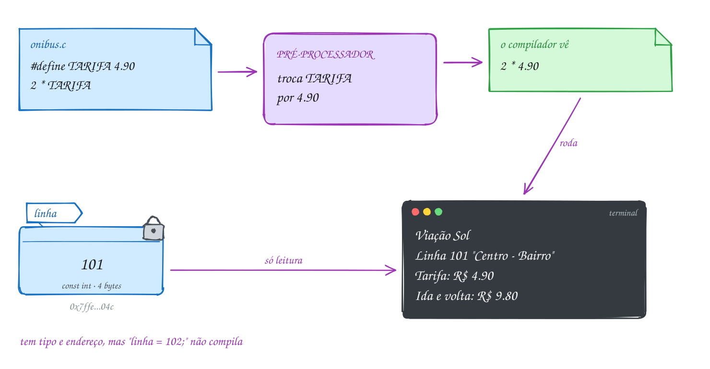
#include <stdio.h>
#define TARIFA 4.90 // muda aqui, muda no programa todo
#define EMPRESA "Viação Sol"
int main(void) {
const int linha = 101; // variável só de leitura
printf("%s\n", EMPRESA);
printf("Linha %d \"Centro - Bairro\"\n", linha);
printf("Tarifa: R$ %.2f\n", TARIFA);
printf("Ida e volta: R$ %.2f\n", 2 * TARIFA); // o compilador vê 2 * 4.90
return 0;
}
// Saída:
// Viação Sol
// Linha 101 "Centro - Bairro"
// Tarifa: R$ 4.90
// Ida e volta: R$ 9.80
A troca de texto acontece na compilação; o executável já nasce só com os números:
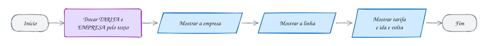
Exemplo A007 · Uma constante feita de outras
#include <stdio.h>
#define TARIFA_CHEIA 4.90
#define DESCONTO_ESTUDANTE 0.5 // estudante paga meia
#define TARIFA_MEIA (TARIFA_CHEIA * DESCONTO_ESTUDANTE) // um #define usando outros
#define CIDADE "Belo Horizonte"
int main(void) {
const double recarga = 50.00; // const: tem tipo, tamanho e endereço
printf("Ônibus de " CIDADE "\n"); // textos lado a lado viram um só
printf("Inteira: R$ %.2f\n", TARIFA_CHEIA);
printf("Meia: R$ %.2f\n", TARIFA_MEIA);
printf("Recarga: R$ %.2f\n", recarga);
// o literal tem tamanho, decidido pelo jeito de escrever
printf("recarga: %zu bytes; 4.90: %zu; 4.90f: %zu\n",
sizeof recarga, sizeof 4.90, sizeof 4.90f);
return 0;
}
// Saída:
// Ônibus de Belo Horizonte
// Inteira: R$ 4.90
// Meia: R$ 2.45
// Recarga: R$ 50.00
// recarga: 8 bytes; 4.90: 8; 4.90f: 4
//
// Veja o que o compilador recebe: gcc -E A007.c | tail -14
// A linha do printf vira "Ônibus de " "Belo Horizonte" "\n" e a meia vira
// (4.90 * 0.5): os parênteses do #define TARIFA_MEIA vão junto.
gcc ~/LPEDC/material/A007.c -o ~/LPEDC/material/A007 && ~/LPEDC/material/A007
Exemplo A008 · Escapes e literais em várias bases
#include <stdio.h>
int main(void) {
// \t: tabulação (pula para a próxima coluna de 8 em 8)
printf("Item\tQtd\n");
printf("Pão\t10\n");
printf("Leite\t2\n");
// \\ e \": a barra e as aspas dentro do texto
printf("Arquivo: C:\\fotos\\praia.jpg\n");
printf("Ela disse: \"Pix feito!\"\n");
printf("Desconto de 15%%\n"); // %% mostra um %
// o mesmo número escrito em três bases
printf("%d %d %d\n", 31, 0x1F, 037);
// um caractere é um número: o código na tabela ASCII
printf("%c = %d, %c = %d\n", 'A', 'A', '0', '0');
// notação científica: 1.5e3 é 1,5 x 10 elevado a 3
printf("%.1f\n", 1.5e3);
return 0;
}
// Saída (o \t alinha "Qtd", "10" e "2" na coluna 9):
// Item Qtd
// Pão 10
// Leite 2
// Arquivo: C:\fotos\praia.jpg
// Ela disse: "Pix feito!"
// Desconto de 15%
// 31 31 31
// A = 65, 0 = 48
// 1500.0
gcc ~/LPEDC/material/A008.c -o ~/LPEDC/material/A008 && ~/LPEDC/material/A008
Exercício E019 · ★☆☆
Mostre exatamente estas linhas, usando sequências de escape. A segunda linha tem um \t entre "Saldo:" e o valor.
Saída esperada:
Backup salvo em C:\Users\ana\notas.txt
Saldo: R$ 120,00
O app avisou: "Pix recebido!"
Rendimento: 100% do CDI
Exercício E021 · ★★☆
Escreva um programa com a mensalidade de uma academia. Defina MENSALIDADE (89.90) e DESCONTO (10.00) com #define, e o dia do vencimento (10) com const int. Mostre os três valores como abaixo, os reais com duas casas.
Saída esperada:
Mensalidade: R$ 89.90
Desconto: R$ 10.00
Vencimento: dia 10
Exercício E022 · ★★☆
O jeito de escrever um literal decide o tipo e, às vezes, o valor. Escreva um programa que mostre, para cada literal abaixo, o valor (com %d para os inteiros e %.1f para os reais) e o tamanho (sizeof, com %zu). O "0" é texto: dele, mostre só o tamanho.
10 10.0 10.0f 010 0x10 '0' "0" 1e3
Saída esperada:
10: vale 10, 4 bytes
10.0: vale 10.0, 8 bytes
10.0f: vale 10.0, 4 bytes
010: vale 8, 4 bytes
0x10: vale 16, 4 bytes
'0': vale 48, 4 bytes
"0": 2 bytes
1e3: vale 1000.0, 8 bytes
Exercício E024 · ★★★
Escreva um programa que mostre as seis linhas abaixo, seguindo as regras de cada uma:
do começo da linha fica dentro das aspas do formato;
e o código do ! escrito em decimal (33);
Saída esperada:
CIDADE: Recife
DDD 81
8 16 10
Oi!
50% off
a\n b
Até aqui o programa calcula, mas quem usa só enxerga o que aparece na tela. O
printf é a ponte entre a memória e o terminal: ele pega valores que estão em
variáveis e os escreve como texto. A graça é que você não escreve o texto
pronto. Você escreve um molde e diz o que vai em cada lacuna.
Pense num formulário de papel: "Nome: ______ Idade: ___". O formulário já
traz o texto fixo e reserva os espaços; quem preenche só põe os dados. No
printf o formulário é o primeiro argumento, a string de formato, e cada
lacuna é um especificador, que começa com %. Os argumentos que vêm
depois preenchem as lacunas na ordem: o primeiro valor vai no primeiro
%, o segundo no segundo, e assim por diante (BACKES, 2013, cap. 2).
printf("Idade: %d anos, altura: %.2f m\n", 34, 1.72);
// Idade: 34 anos, altura: 1.72 m
A letra depois do % diz como ler o valor. %d lê um inteiro e o mostra
em decimal; %f lê um real; %c, um caractere; %s, um texto. Isso importa
porque o printf não sabe o tipo das variáveis que você passou: ele só
recebe bytes e confia no molde para interpretá-los. Um detalhe dessa
passagem: todo float chega ao printf convertido em double, e é por isso
que o mesmo %f serve para os dois (KERRISK, s.d.). A tabela reúne as
letras que você vai usar no curso:
| Especificador | Mostra | Exemplo | Sai |
|---|---|---|---|
%d |
int em decimal |
printf("%d", 42) |
42 |
%u, %ld, %lld |
unsigned, long, long long |
printf("%ld", 9L) |
9 |
%f |
double ou float |
printf("%f", 2.5) |
2.500000 |
%e, %g |
real em notação científica / o mais curto | printf("%e", 1500.0) |
1.500000e+03 |
%c |
um caractere | printf("%c", 'A') |
A |
%s |
um texto | printf("%s", "Pix") |
Pix |
%x, %X, %o |
inteiro em hexa e em octal | printf("%X", 255) |
FF |
%p |
um endereço | printf("%p", (void *)&n) |
0x7ffe... |
%zu |
o resultado do sizeof |
printf("%zu", sizeof n) |
4 |
%% |
o próprio % |
printf("10%%") |
10% |
Só a letra já resolve a maior parte dos casos. Para alinhar colunas ou
controlar casas decimais, cabem ajustes entre o % e a letra, sempre nesta
ordem: %[flags][largura][.precisão]letra (KERRISK, s.d.). Vale ler um por
vez.
A largura é o número mínimo de caracteres que o valor ocupa. Se o
valor for menor, o printf completa com espaços à esquerda, e o número fica
encostado à direita: %6d de 42 sai 42 (quatro espaços e o 42). Se o
valor for maior que a largura, ele sai inteiro; a largura nunca corta nada
(DEITEL; DEITEL, 2011, cap. 9). Um cuidado com acentos: a largura conta
bytes, e no UTF-8 o ã ocupa dois. "Feijão" tem 6 letras e 7 bytes,
então numa coluna %-10s ele parece uma casa mais curto que "Arroz".
As flags mudam o preenchimento. O - encosta o valor à esquerda e põe
os espaços depois (%-6d sai 42 ); o 0 troca os espaços por zeros
(%06d sai 000042); o + mostra o sinal mesmo quando o número é positivo
(DEITEL; DEITEL, 2011, cap. 9).
A precisão vem depois de um ponto. Num real, ela é o número de casas
decimais: %.2f de 3.14159 sai 3.14. Num texto, é o máximo de caracteres:
%.3s de "Brasil" sai Bra. Repare que a precisão arredonda só na
tela: %.2f de 7.499 mostra 7.50, mas a variável continua valendo 7.499
na memória (DEITEL; DEITEL, 2011, cap. 9). O cálculo seguinte usa o valor
completo, não o que você viu.
Por fim, o printf escreve na saída padrão, o stdout, que normalmente
é o terminal. No módulo 09, o fprintf usa exatamente o mesmo molde para
escrever num arquivo, então tudo o que você aprende aqui vale lá também
(DEITEL; DEITEL, 2011, cap. 9).
[!WARNING] O
printfconfia no formato. Se a letra não combina com o tipo do valor, ele lê os bytes do jeito errado:printf("%d", 9.90)não mostra 9 nem 10, mostra lixo. O-Wallavisa (format '%d' expects argument of type 'int'); nunca ignore. E noprintfnão vai&: ele quer o valor, não o endereço.
O cupom do mercado sai com colunas alinhadas. Na linha do arroz, %-10s
reserva 10 casas para o nome, %3d reserva 3 para a quantidade e %9.2f
reserva 9 para o total, com 2 decimais:
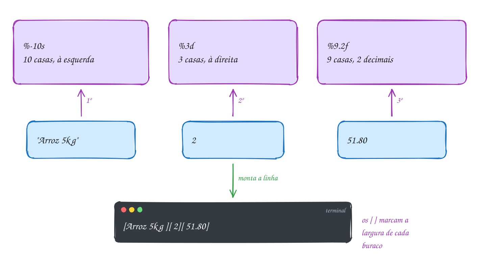
#include <stdio.h>
int main(void) {
printf("%-10s %3s %9s\n", "Item", "Qtd", "Total");
printf("%-10s %3d %9.2f\n", "Arroz 5kg", 2, 51.80);
printf("%-10s %3d %9.2f\n", "Leite", 12, 71.88);
printf("%-10s %3d %9.2f\n", "Banana", 1, 7.49);
printf("%-10s %13.2f\n", "TOTAL", 131.17);
return 0;
}
// Saída:
// Item Qtd Total
// Arroz 5kg 2 51.80
// Leite 12 71.88
// Banana 1 7.49
// TOTAL 131.17
Cada printf é uma saída com o mesmo formato. Para mudar uma coluna, troque
um número em cada linha:
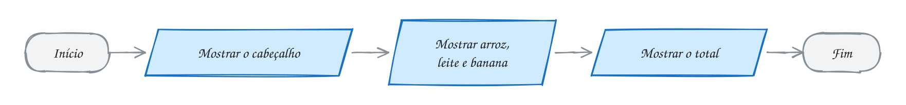
Exemplo A009 · O extrato que corta o nome comprido
#include <stdio.h>
int main(void) {
// zeros à esquerda: o número da conta tem sempre 6 dígitos
printf("Conta %06d-%d\n", 4521, 7);
// %-14.14s: coluna de 14 casas e, se o texto for maior, corta em 14
// %+9.2f: sinal sempre, para entrada e saída ficarem claras
printf("%-14.14s %+9.2f\n", "Pix recebido de Mariana", 250.00);
printf("%-14.14s %+9.2f\n", "Mercado", -87.35);
printf("%-14.14s %+9.2f\n", "Conta de luz da casa", -142.10);
printf("%-14s %9.2f\n", "Saldo", 20.55);
// o mesmo valor com precisões diferentes: só a tela muda
double juros = 0.0875;
printf("Juros: %.1f%% ou %.3f%%\n", juros * 100, juros * 100);
return 0;
}
// Saída:
// Conta 004521-7
// Pix recebido d +250.00
// Mercado -87.35
// Conta de luz d -142.10
// Saldo 20.55
// Juros: 8.8% ou 8.750%
gcc ~/LPEDC/material/A009.c -o ~/LPEDC/material/A009 && ~/LPEDC/material/A009
Exemplo A010 · O mesmo valor em vários formatos
#include <stdio.h>
int main(void) {
int n = 255;
double preco = 3.14159;
char letra = 'A';
// inteiros: largura, alinhamento, zeros, sinal e outras bases
printf("[%d] [%6d] [%-6d] [%06d] [%+d]\n", n, n, n, n, n);
printf("hexa: %x %X %#x octal: %o\n", n, n, n, n);
// reais: casas decimais, largura, científica e o "mais curto"
printf("[%f] [%.2f] [%8.3f] [%e] [%g]\n", preco, preco, preco, preco, preco);
// caractere e texto (com precisão, o texto é cortado)
printf("[%c] [%d] [%s] [%.4s] [%8s]\n", letra, letra, "Brasil", "Brasil", "Brasil");
// o endereço de uma variável e o próprio %
printf("n mora em %p; 100%% certo\n", (void *)&n);
// o printf devolve quantos bytes escreveu
int bytes = printf("Olá\n");
printf("O printf anterior escreveu %d bytes\n", bytes);
return 0;
}
// Saída (o endereço muda a cada execução):
// [255] [ 255] [255 ] [000255] [+255]
// hexa: ff FF 0xff octal: 377
// [3.141590] [3.14] [ 3.142] [3.141590e+00] [3.14159]
// [A] [65] [Brasil] [Bras] [ Brasil]
// n mora em 0x7f1c2a400020; 100% certo
// Olá
// O printf anterior escreveu 5 bytes
gcc ~/LPEDC/material/A010.c -o ~/LPEDC/material/A010 && ~/LPEDC/material/A010
Exercício E025 · ★☆☆
Mostre o boletim da Júlia com um printf por linha, usando variáveis: nota 8.75 (mostrada com uma casa), 3 faltas e conceito 'B'.
Saída esperada:
Aluna: Júlia
Nota: 8.8
Faltas: 03
Conceito: B
Exercício E027 · ★★☆
Monte o painel de preços do posto, com as colunas alinhadas. Guarde cada preço numa variável double e use largura no formato (nada de contar espaços à mão). A linha de separação tem 22 sinais de igual.
Saída esperada:
Combustível Preço/L
======================
Gasolina R$ 6.29
Etanol R$ 4.19
Diesel S10 R$ 6.09
GNV R$ 4.99
Exercício E028 · ★★☆
O pedido da pizzaria tem 3 pizzas de R$ 45.90. Escreva um programa que guarde a quantidade (int) e o preço (double), calcule o total e mostre as três linhas abaixo, com o formato certo para cada tipo.
Saída esperada:
Pizzas: 3
Preço: R$ 45.90
Total: R$ 137.70
Exercício E029 · ★★★
No CSS, uma cor é escrita como #RRGGBB: três bytes em hexadecimal, sempre com dois dígitos cada. O azul do botão do seu app tem vermelho 30, verde 144 e azul 255. Guarde os três componentes em variáveis int e mostre a cor nos dois formatos do CSS.
Saída esperada:
#1E90FF
rgb(30, 144, 255)
Teste também com vermelho 0, verde 8 e azul 15: a saída tem de ser #00080F, sempre com 7 caracteres.
Até aqui os programas só falavam: todo valor estava escrito no código. Um
programa útil também precisa ouvir. No modelo entrada → processamento →
saída, falta a entrada, e a forma mais simples de entrada é o teclado. Quem
faz esse papel no C é o scanf, o espelho do printf.
Pense no app do banco quando você agenda um Pix. Ele pergunta o valor, você
digita R$ 150,75; pergunta o dia, você digita 12. O app pega o que você
digitou e guarda cada coisa no seu campo. O scanf faz o mesmo: o
primeiro argumento, o formato, diz o que esperar, e os argumentos seguintes
dizem onde guardar cada valor lido (BACKES, 2013, cap. 2).
scanf("%d", &dia);
O & antes do nome é a peça nova. Ele dá o endereço da variável, o
lugar exato da memória em que ela mora (0002). O scanf não quer o valor
de dia, que ainda é lixo; quer saber em que bytes escrever o número
digitado. Por isso o & vai em toda variável simples no scanf e nunca no
printf, que só precisa do valor para mostrar (DEITEL; DEITEL, 2011,
cap. 9).
Os especificadores quase repetem os do printf, com uma diferença que pega
muita gente: o double se lê com %lf e se mostra com %f. O motivo
está no endereço. Com %lf, o scanf escreve 8 bytes, no formato de
double; com %f, escreve só 4, no formato de float, e o double fica
com um número sem sentido. No printf os dois servem porque ele recebe o
valor, e todo float vira double no caminho; endereço não se converte
(DEITEL; DEITEL, 2011).
| Tipo | Lê com | Mostra com |
|---|---|---|
int |
%d |
%d |
float |
%f |
%f |
double |
%lf |
%f |
char |
%c (ou " %c") |
%c |
O que você digita não vai direto para a variável. Os caracteres entram
numa fila, o buffer, e só chegam ao programa quando você aperta Enter.
O scanf tira da fila apenas o que o formato pede. O %d e o %lf pulam
espaços e Enters antes do número e param no primeiro caractere que não
serve; o resto fica na fila para a próxima leitura, inclusive o '\n'
do Enter (KERRISK, s.d.). Digitando 150.75, Enter, 12, Enter, o %lf
tira 150.75, o %d pula o '\n' que sobrou e tira o 12, e o último
'\n' continua lá. O %c não pula nada e leria esse '\n'; o espaço em
" %c" manda pular os brancos antes.
O formato também pode ter caracteres comuns, e eles precisam aparecer na
entrada exatamente como estão. Com scanf("%d/%d/%d", &d, &m, &a), você
digita 7/9/2026, e o scanf lê um número, consome a barra, lê outro
número e assim por diante (BACKES, 2013, cap. 2).
Por fim, o scanf devolve um número: quantos itens ele conseguiu
guardar. Se tudo deu certo na data acima, devolve 3. Se o primeiro valor já
falhou, como doze no lugar de 12, devolve 0 e a variável fica como
estava. Se a entrada acabou, devolve EOF, que vale -1 (DEITEL; DEITEL,
2011, cap. 9). É assim que o programa descobre se a leitura funcionou; no
módulo 02, o if vai usar esse número para decidir o que fazer.
[!WARNING] Sem o
&,scanf("%d", dia)usa o lixo dediacomo endereço e escreve num lugar qualquer:Segmentation faultou outra variável estragada. O gcc avisa (expects argument of type 'int *'). Lerdoublecom%ftambém compila e dá número errado.
Um Pix agendado: você digita 150.75, Enter, 12, Enter. O %lf tira
150.75 da fila, o %d pula o '\n' que sobrou e tira o 12; o último
'\n' fica na fila:
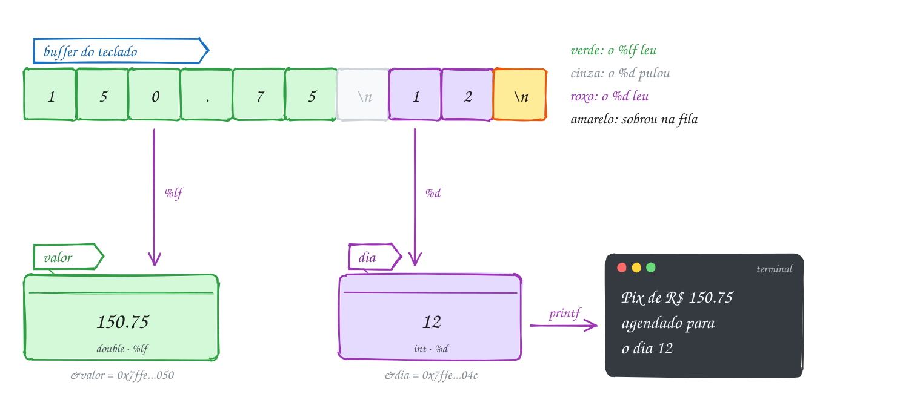
#include <stdio.h>
int main(void) {
double valor;
int dia;
printf("Valor do Pix: R$ ");
scanf("%lf", &valor); // %lf: double no scanf
printf("Dia do mês: ");
int lidos = scanf("%d", &dia); // devolve quantos itens leu
printf("Pix de R$ %.2f agendado para o dia %d\n", valor, dia);
printf("O último scanf leu %d item\n", lidos);
return 0;
}
// Exemplo de execução:
// Valor do Pix: R$ 150.75
// Dia do mês: 12
// Pix de R$ 150.75 agendado para o dia 12
// O último scanf leu 1 item
Para testar sem digitar: printf '150.75\n12\n' | ./pix. As duas leituras
são paralelogramos de entrada, e a saída vem depois:
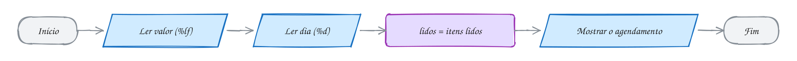
Exemplo A011 · Dois valores numa linha e a sobra que atrapalha
#include <stdio.h>
int main(void) {
int quantidade = 0;
double preco = 0.0;
int parcelas = 1;
// um scanf, dois valores: o %lf pula o espaço entre eles
printf("Quantidade e preço (ex.: 3 4.99): ");
int lidos = scanf("%d%lf", &quantidade, &preco);
printf("Itens lidos: %d\n", lidos);
printf("Parcelas: ");
lidos = scanf("%d", &parcelas);
printf("Itens lidos: %d\n", lidos);
printf("%d unidade(s) de R$ %.2f em %d parcela(s)\n", quantidade, preco, parcelas);
return 0;
}
// Exemplo de execução:
// Quantidade e preço (ex.: 3 4.99): 3 4.99
// Itens lidos: 2
// Parcelas: 2
// Itens lidos: 1
// 3 unidade(s) de R$ 4.99 em 2 parcela(s)
//
// Teste: printf '3 4.99\n2\n' | ~/LPEDC/rodar <este arquivo>
//
// Agora digite "3 4.99 reais" na primeira pergunta:
// printf '3 4.99 reais\n2\n' | ~/LPEDC/rodar <este arquivo>
// O " reais" fica na fila. O %d das parcelas tropeça no 'r', devolve 0
// ("Itens lidos: 0") e parcelas continua com 1. O 2 nem chega a ser lido.
gcc ~/LPEDC/material/A011.c -o ~/LPEDC/material/A011 && ~/LPEDC/material/A011
Exemplo A012 · A data da entrega e o tamanho da camiseta
#include <stdio.h>
int main(void) {
int dia = 0, mes = 0, ano = 0;
char tamanho = '?';
// caracteres fixos no formato precisam ser digitados: aqui, as barras
printf("Data da entrega (dd/mm/aaaa): ");
int lidos = scanf("%d/%d/%d", &dia, &mes, &ano);
printf("Itens lidos: %d\n", lidos);
// o Enter da linha anterior ficou no buffer. O espaço antes do %c
// manda pular espaços e Enters; sem ele, o %c pegaria o '\n'
printf("Tamanho (P, M ou G): ");
scanf(" %c", &tamanho);
printf("Entrega em %02d/%02d/%d, camiseta %c\n", dia, mes, ano, tamanho);
return 0;
}
// Exemplo de execução:
// Data da entrega (dd/mm/aaaa): 7/9/2026
// Itens lidos: 3
// Tamanho (P, M ou G): G
// Entrega em 07/09/2026, camiseta G
//
// Teste: printf '7/9/2026\nG\n' | ~/LPEDC/rodar <este arquivo>
// Agora digite a data com traços (7-9-2026): o scanf para no primeiro "-" e
// lê só 1 item. O "-" fica no buffer, e o %c seguinte pega ele: a saída
// vira "Entrega em 07/00/0, camiseta -".
gcc ~/LPEDC/material/A012.c -o ~/LPEDC/material/A012 && ~/LPEDC/material/A012
Exercício E031 · ★☆☆
Escreva um programa que leia a idade (inteiro) e a altura em metros (real), nessa ordem, sem mostrar perguntas, e responda numa frase só, com a altura em duas casas.
Entrada:
30
1.75
Saída esperada:
Você tem 30 anos e 1.75 m de altura.
Exercício E033 · ★★☆
O alarme do celular pede a hora no formato hh:mm. Escreva um programa que comece com hora = 0 e minuto = 0, leia os dois com UM scanf só ("%d:%d") e guarde o valor que o scanf devolve. Mostre quantos itens ele leu e a hora de dois jeitos. Teste com 6:05 e com "6 05" (espaço no lugar dos dois pontos).
Entrada:
6:05
Saída esperada:
Itens lidos: 2
Alarme para 6h05
Alarme para 06:05
Entrada:
6 05
Saída esperada:
Itens lidos: 1
Alarme para 6h00
Alarme para 06:00
Exercício E034 · ★★☆
A lanchonete lê a quantidade de lanches (int) e a opção, V para viagem ou A para comer aqui (char), cada uma em uma linha. Escreva um programa que leia as duas, sem mostrar perguntas, e mostre a frase abaixo, com o código numérico do caractere no final.
Entrada:
3
V
Saída esperada:
3 lanche(s), opção V (código 86)
Exercício E035 · ★★★
Escreva um programa que comece com int a = 0, b = 0;, leia os dois com UM scanf("%d %d", &a, &b), guarde o retorno e mostre "lidos=? a=? b=?". Teste com as três entradas abaixo.
Entrada:
7 9
Saída esperada:
lidos=2 a=7 b=9
Entrada:
7 x
Saída esperada:
lidos=1 a=7 b=0
Entrada:
x 7
Saída esperada:
lidos=0 a=0 b=0
Com a entrada (0006) e a saída (0005) prontas, falta o meio do modelo: o processamento, calcular o que vai sair a partir do que entrou. Quase todo cálculo começa nas quatro operações da escola, e o C as escreve de um jeito familiar. Familiar demais, porque uma delas, a divisão, não se comporta como na calculadora.
Pense em cinco amigos que pedem três pizzas de 8 fatias. São 24 fatias, e cada um pega uma por rodada. Quatro rodadas completas dão 20 fatias, e sobram 4 na caixa. Ninguém corta fatia ao meio. A divisão entre inteiros do C funciona assim: conta as rodadas completas e deixa a sobra de lado.
Antes, dois nomes. Em 24 / 5, o / é o operador, o símbolo da
operação, e 24 e 5 são os operandos, os valores sobre os quais ele age.
Operadores, operandos e parênteses formam uma expressão, e toda
expressão tem um valor (DEITEL; DEITEL, 2011, cap. 2). 24 - 4 vale 20;
3 * 8 vale 24.
| Operador | Faz | Exemplo | Resultado |
|---|---|---|---|
+ - |
soma, subtração | 24 - 4 |
20 |
* |
multiplicação | 3 * 8 |
24 |
/ |
divisão | 24 / 5 |
4 (!) |
% |
resto da divisão | 24 % 5 |
4 |
A pegadinha está no /. Quando os dois operandos são inteiros, a
divisão é inteira: o resultado é inteiro e a parte fracionária vai
embora, sem arredondar. 7 / 2 dá 3, e 2 / 3 dá 0. Basta um lado
ser real para a divisão ser real: 159.0 / 5 dá 31,8 (DEITEL; DEITEL,
2011, cap. 2). O que decide é o tipo dos operandos, não a variável que vai
receber o resultado.
printf("%d %d\n", 24 / 5, 24 % 5); // 4 4
printf("%.1f\n", 159.0 / 5); // 31.8
O %, chamado de módulo, devolve o resto da divisão inteira e só
aceita inteiros. O / diz quantas vezes o 5 cabe no 24; o % diz o que
sobrou. As duas respostas sempre se encaixam:
(a / b) * b + a % b == a (DEITEL; DEITEL, 2011, cap. 2). O resto parece
modesto, mas aparece em todo lugar. 2026 % 10 dá 6, o último dígito.
n % 2 dá 0 quando n é par e 1 quando é ímpar. E segundos % 60 dá os
segundos que sobram depois de contar os minutos.
Com números negativos, o C segue uma regra fixa desde o C99: a divisão
corta em direção ao zero, então -7 / 2 dá -3, e o resto fica com o sinal
do dividendo, o número da esquerda, então -7 % 3 dá -1 (FEOFILOFF, 2009,
ap. C). A igualdade do parágrafo anterior continua valendo: -3 × 2 + (-1)
dá -7.
Quando a expressão tem vários operadores, entra a precedência, a ordem
em que eles agem. Ela é a da escola: *, / e % antes de + e -.
No empate de precedência, a conta segue da esquerda para a direita, regra
chamada associatividade: 100 / 10 / 2 é (100 / 10) / 2, que dá 5
(BACKES, 2013, cap. 3). Em 2 + 3 * 4 % 5, primeiro 3 * 4 dá 12, depois
12 % 5 dá 2 e por fim 2 + 2 dá 4. Parênteses mandam em tudo e deixam a
intenção clara para quem lê.
Falta a potência, e o C não tem operador para ela. O ^ existe, mas faz
outra coisa (assunto 0065). Para elevar ao quadrado, multiplique, x * x,
ou use a função pow do 0010 (DEITEL; DEITEL, 2011, cap. 2).
Por último, a divisão por zero. Com inteiros, ela derruba o programa na
hora, com a mensagem Floating point exception. Com double, o programa
continua e o resultado é inf, o infinito (ISO/IEC, 2018). Nos dois casos
a conta está errada; confira o divisor antes de dividir.
[!WARNING] Com
int a = 7, b = 8;,double media = (a + b) / 2;guarda 7.0: a divisão é entre doisintantes de ir para odouble. Escreva(a + b) / 2.0. Ea + b / 2divide só ob.
Cinco amigos dividem três pizzas de 8 fatias e uma conta de R$ 159. O /
conta as rodadas completas de fatias e o % as que sobram:
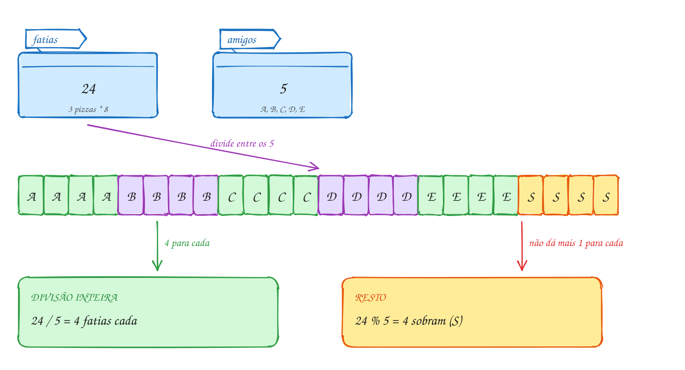
#include <stdio.h>
int main(void) {
int pizzas = 3;
int fatias = pizzas * 8; // 24
int amigos = 5;
int cada = fatias / amigos; // divisão inteira: 4
int sobra = fatias % amigos; // resto: 4
printf("%d fatias para %d amigos\n", fatias, amigos);
printf("Cada um come %d, sobram %d\n", cada, sobra);
double conta = 159.00;
printf("Cada um paga R$ %.2f\n", conta / amigos); // real / int: divisão real
printf("Com inteiros: R$ %d\n", 159 / amigos); // int / int: corta o resto
return 0;
}
// Saída:
// 24 fatias para 5 amigos
// Cada um come 4, sobram 4
// Cada um paga R$ 31.80
// Com inteiros: R$ 31
Cada conta é um retângulo, e a ordem importa: cada e sobra dependem de
fatias:
Exemplo A013 · O final da placa e o rodízio
#include <stdio.h>
// No rodízio de São Paulo, o dia em que o carro não roda depende do último
// dígito da placa (finais 7 e 8: quinta-feira). Quem separa dígitos é o par
// / e %, com divisores 10, 100, 1000...
int main(void) {
int placa = 4827; // a parte numérica de ABC-4827
int final = placa % 10; // o resto por 10 é o último dígito: 7
int sem_final = placa / 10; // a divisão por 10 corta o último: 482
int dois_primeiros = placa / 100; // 48
int dois_ultimos = placa % 100; // 27
printf("Final da placa: %d\n", final);
printf("Sem o final: %d\n", sem_final);
printf("Metades: %d e %d\n", dois_primeiros, dois_ultimos);
printf("Final %% 2 = %d (0 é par, 1 é ímpar)\n", final % 2);
// a regra que amarra os dois: (a / b) * b + a % b devolve o a
printf("%d * 100 + %d = %d\n", dois_primeiros, dois_ultimos,
dois_primeiros * 100 + dois_ultimos);
// o dígito do meio: corta pela direita com /, isola com %
printf("Dígito das centenas: %d\n", placa / 100 % 10);
return 0;
}
// Saída:
// Final da placa: 7
// Sem o final: 482
// Metades: 48 e 27
// Final % 2 = 1 (0 é par, 1 é ímpar)
// 48 * 100 + 27 = 4827
// Dígito das centenas: 8
gcc ~/LPEDC/material/A013.c -o ~/LPEDC/material/A013 && ~/LPEDC/material/A013
Exemplo A014 · Quanto dura o podcast
#include <stdio.h>
// O app mostra a duração em segundos. Divisão inteira e resto convertem
// para horas, minutos e segundos, sem nenhum número real.
int main(void) {
int total = 5000; // segundos
int horas = total / 3600; // 1 (3600 segundos cabem 1 vez)
int resto = total % 3600; // 1400 segundos que sobraram
int minutos = resto / 60; // 23
int segundos = resto % 60; // 20
printf("%d s = %dh %02dmin %02ds\n", total, horas, minutos, segundos);
// precedência: * / % antes de + -, da esquerda para a direita
printf("%d %d %d\n", 2 + 3 * 4, (2 + 3) * 4, 100 / 10 / 2);
// com negativos, a divisão corta em direção ao zero
// e o resto fica com o sinal de quem é dividido
printf("%d %d %d %d\n", 7 / 2, -7 / 2, 7 % 3, -7 % 3);
return 0;
}
// Saída:
// 5000 s = 1h 23min 20s
// 14 20 5
// 3 -3 1 -1
gcc ~/LPEDC/material/A014.c -o ~/LPEDC/material/A014 && ~/LPEDC/material/A014
Exercício E037 · ★☆☆
Para a festa, você fez 50 brigadeiros e vai embalar em caixas de 12. Quantas caixas ficam cheias e quantos brigadeiros sobram? E os 7 ingressos do show a R$ 35 cada, quanto custam juntos? Use variáveis e deixe o programa fazer as contas.
Saída esperada:
Caixas cheias: 4
Sobram: 2 brigadeiros
Ingressos: R$ 245
Exercício E039 · ★★☆
Escreva o programa que racha a conta do restaurante: lê o valor da conta e o número de pessoas, sem mostrar perguntas, soma 10% de serviço e mostra o serviço, o total e quanto cada um paga, tudo em duas casas.
Entrada:
237.50
4
Saída esperada:
Serviço (10%): R$ 23.75
Total: R$ 261.25
Cada um: R$ 65.31
Exercício E040 · ★★☆
Escreva um programa com três notas inteiras: 8, 7 e 8. Calcule a média como double, de dois jeitos: (1) dividindo a soma por 3.0; (2) convertendo a soma para double com um cast antes de dividir por 3. Mostre as duas com duas casas.
Saída esperada:
Média 1: 7.67
Média 2: 7.67
Exercício E042 · ★★★
Leia um número de 3 dígitos, sem mostrar pergunta, e mostre ao contrário, usando só / e % (nada de texto). O programa tem de funcionar também quando o número termina em zero: com 120, a saída é 021, sempre com três dígitos. Teste com 472 e com 120.
Entrada:
472
Saída esperada:
Ao contrário: 274
Entrada:
120
Saída esperada:
Ao contrário: 021
No 0007, (a + b) / 2 perdeu os decimais porque os dois lados eram
inteiros. Isso vai acontecer sempre que um cálculo misturar tipos ou
guardar um resultado num tipo diferente. Para não ser pego de surpresa, você
precisa saber quando o C converte um valor sozinho e como pedir a conversão
quando ela não vem.
Pense no carro. Você rodou 523 km e gastou 41 litros para encher o tanque.
A calculadora diz que o consumo é 523 ÷ 41 ≈ 12,76 km por litro. O C, com
dois int, responde 12. Ninguém errou a conta: o C fez exatamente o que os
tipos pediam, uma divisão inteira.
O ponto de partida é este: toda expressão tem um valor e um tipo.
Quando os operandos têm o mesmo tipo, o resultado tem esse tipo, e por isso
int / int dá int (DEITEL; DEITEL, 2011). Quando os tipos são
diferentes, o C faz a conversão automática, também chamada de
conversão implícita: o operando "menor" sobe para o tipo do "maior" antes
da conta. A escada é char → short → int → long → long long →
float → double (DEITEL; DEITEL, 2011). Em 523 / 41.0, o 523 sobe
para double, a conta vira 523.0 / 41.0 e dá 12,756...
Na atribuição, a conversão segue outra regra: o valor vira o tipo da
variável da esquerda, caiba ou não. double d = 12; guarda 12.0, sem
problema. int i = 12.76; guarda 12, porque a parte fracionária é
cortada, não arredondada; -9.99 vira -9 (BACKES, 2013, cap. 2). E um
valor grande demais para um tipo pequeno perde bits, como o odômetro do
0003. Com as opções do curso, o compilador não avisa nenhum desses cortes.
Quando a conversão automática não basta, você escolhe a sua com o cast,
ou conversão explícita: o tipo entre parênteses na frente do valor,
(double) km. O cast não muda a variável. Ele cria uma cópia
temporária já convertida e a entrega para a conta; km continua int
depois (DEITEL; DEITEL, 2011).
int km = 523, litros = 41;
printf("%d\n", km / litros); // 12
printf("%.2f\n", (double) km / litros); // 12.76
Repare na segunda linha. A precedência do cast é maior que a de * e /,
então (double) km / litros converte só o km, e só depois divide
(BACKES, 2013, cap. 3). Basta isso: com um lado double, a conversão
automática sobe o litros e a divisão é real.
Um int e um double de mesmo valor têm bits completamente diferentes na
memória, e o processador faz trabalho de verdade para passar de um para o
outro. Às vezes nem cabe. O float guarda
inteiros exatos só até 2²⁴ = 16.777.216: float f = 16777217; vira
16777216. O double vai até 2⁵³. E converter para int um double maior
que o int aguenta é comportamento indefinido (ISO/IEC, 2018).
[!WARNING] O cast precisa chegar antes da divisão. Em
(double) (km / litros), os parênteses mandam dividir primeiro:523 / 41dá 12 e o cast só o transforma em 12.0. O mesmo vale paradouble media = soma / n;com dois inteiros. Converta um operando:(double) soma / n.
Um carro rodou 523 km com 41 litros. Pelo caminho de cima, os dois int se
dividem, sai 12 e só então vira 12.0; pelo de baixo, o cast transforma 523 em
523.0 antes da divisão:
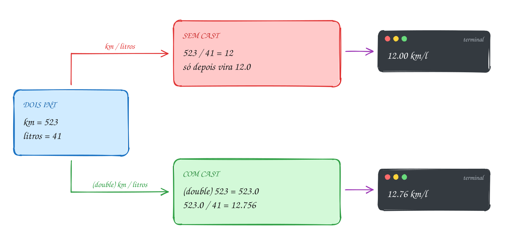
#include <stdio.h>
int main(void) {
int km = 523; // rodados desde o último tanque
int litros = 41; // para encher de novo
double errado = km / litros; // int / int = 12; depois vira 12.0
double certo = (double) km / litros; // 523.0 / 41 = 12.756...
double tarde = (double) (km / litros); // o cast chegou depois da divisão
printf("Sem cast: %.2f km/l\n", errado);
printf("Com cast: %.2f km/l\n", certo);
printf("Cast atrasado: %.2f km/l\n", tarde);
int inteiro = certo; // double -> int: corta, não arredonda
printf("Num int: %d km/l\n", inteiro);
return 0;
}
// Saída:
// Sem cast: 12.00 km/l
// Com cast: 12.76 km/l
// Cast atrasado: 12.00 km/l
// Num int: 12 km/l
Quem responde "tem um real na divisão?" é o compilador, pelos tipos. Com o cast, o exemplo segue pelo Sim:
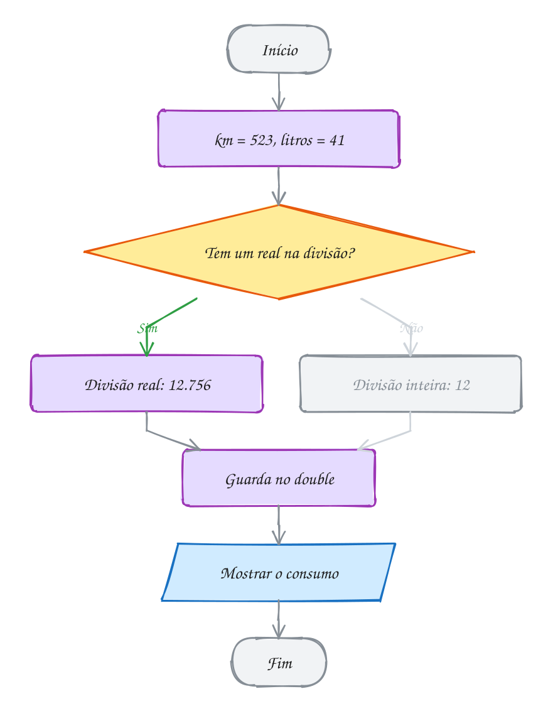
Exemplo A015 · O cast que corta de propósito
#include <stdio.h>
int main(void) {
// quantos pacotes cheios de 2.5 kg saem de 18 kg de café?
double estoque = 18.0, pacote = 2.5;
int cheios = (int) (estoque / pacote); // 7.2 vira 7: aqui cortar é o certo
double sobra = estoque - cheios * pacote; // int * double: a conta é real
printf("Pacotes cheios: %d\n", cheios);
printf("Sobram %.1f kg\n", sobra);
// horas decimais do ponto eletrônico para horas e minutos
double trabalhadas = 2.75;
int horas = (int) trabalhadas; // 2
int minutos = (int) ((trabalhadas - horas) * 60); // 0.75 * 60 = 45
printf("%.2f h = %d h %d min\n", trabalhadas, horas, minutos);
// o cast pega só o valor logo à direita dele
printf("(int) 2.75 * 60 = %d\n", (int) 2.75 * 60); // 2 * 60
printf("(int) (2.75 * 60) = %d\n", (int) (2.75 * 60)); // 165.0 vira 165
return 0;
}
// Saída:
// Pacotes cheios: 7
// Sobram 0.5 kg
// 2.75 h = 2 h 45 min
// (int) 2.75 * 60 = 120
// (int) (2.75 * 60) = 165
gcc ~/LPEDC/material/A015.c -o ~/LPEDC/material/A015 && ~/LPEDC/material/A015
Exemplo A016 · Conversões que acontecem sozinhas
#include <stdio.h>
int main(void) {
// na atribuição, o valor vira o tipo da variável da esquerda
char letra = 65; // int -> char: o código 65 é 'A'
int preco = 9.99; // double -> int: corta para 9
int negativo = -9.99; // corta em direção ao zero: -9
double metade = 7 / 2; // a divisão inteira vem antes: 3.0
printf("%c %d %d %.1f\n", letra, preco, negativo, metade);
// numa conta, o tipo "menor" sobe para o "maior"
char minuscula = 'g';
printf("%c\n", minuscula - 32); // char vira int: 103 - 32 = 71 = 'G'
printf("%.2f\n", 5 / 2 * 2.0); // (5 / 2) é 2; 2 * 2.0 = 4.00
printf("%.2f\n", 5 * 2.0 / 2); // 5 * 2.0 = 10.0; 10.0 / 2 = 5.00
// o cast é explícito e cria uma cópia temporária: a variável não muda
int gols = 7, jogos = 3;
printf("Média: %.2f gols; gols continua %d\n", (double) gols / jogos, gols);
// real em binário é aproximado
float grande = 16777217; // o float não tem dígitos para tanto
printf("%.1f\n", grande);
printf("%.17f\n", 0.1 + 0.2);
return 0;
}
// Saída:
// A 9 -9 3.0
// G
// 4.00
// 5.00
// Média: 2.33 gols; gols continua 7
// 16777216.0
// 0.30000000000000004
gcc ~/LPEDC/material/A016.c -o ~/LPEDC/material/A016 && ~/LPEDC/material/A016
Exercício E043 · ★☆☆
As notas do simulado são inteiras: 7, 8 e 10. Guarde em três int e mostre a média com duas casas, usando um cast (sem trocar o tipo das variáveis e sem escrever 3.0).
Saída esperada:
Média: 8.33
Exercício E045 · ★★☆
Na eleição para síndico, a candidata Marta teve 47 dos 130 votos. Guarde os dois números em variáveis int e mostre o percentual dela com duas casas. Depois mostre também o resultado das duas fórmulas que o colega tentou antes, com as mesmas variáveis e %d, para ver o estrago de cada uma.
Saída esperada:
Marta: 36.15% dos votos
votos / total * 100 = 0
100 * votos / total = 36
Exercício E046 · ★★☆
Na balança do açougue, a picanha custa R$ 45.90 o quilo. Escreva um programa com gramas = 600 (int) e preco_kg = 45.90 (double) que calcule e mostre o preço dessa quantidade. Os tipos das duas variáveis ficam como estão.
Saída esperada:
600 g: R$ 27.54
Exercício E048 · ★★★
Letras são números, e as contas com elas seguem as regras de conversão. Escreva um programa que comece com char letra = 'g'; e mostre as linhas abaixo. Regras: tirando a própria letra 'g', só valem os literais 'a', 'A', 1 e 3 (nada de escrever 'G', 71, 7, 'j' ou 32). Na última linha, use as variáveis double x = 3.7, y = 3.7 e casts para int.
Saída esperada:
Letra: g (código 103)
Maiúscula: G (código 71)
Posição no alfabeto: 7
Três adiante: j
Somando e cortando: 7; cortando e somando: 6
Muita conta de programa não começa do zero: ela parte de um valor que já
existe e o atualiza. O saldo recebe uma recarga, o contador de viagens sobe
um, o total da compra ganha mais um item. Para isso você precisa entender
bem o que o = faz e conhecer os atalhos que o C oferece para essas
atualizações.
Pense no bilhete único com R$ 20,00. Você recarrega R$ 30,00 e ele passa a ter R$ 50,00. Você pega um ônibus de R$ 4,40 e ele fica com R$ 45,60. Em nenhum momento o saldo é recalculado do zero: cada valor novo sai do anterior, e o anterior desaparece do visor.
No C, o = é a atribuição: guarde o valor da direita na variável da
esquerda. Ele não é o "igual" da matemática, que afirma que dois lados são
iguais (BACKES, 2013, cap. 3). Por isso saldo = saldo + 30.00 faz sentido:
o C calcula o lado direito com o valor antigo de saldo e depois escreve o
resultado por cima. Do lado esquerdo só pode ficar algo que tenha endereço,
uma variável. 30 = saldo e saldo + 1 = 5 não compilam, porque 30 e
saldo + 1 não são lugares da memória (BACKES, 2013, cap. 3).
Atualizar uma variável é tão comum que o C tem operadores compostos
para isso: +=, -=, *=, /= e %=. saldo += 30.00 quer dizer
saldo = saldo + 30.00, com o nome escrito uma vez só. Um detalhe: o
composto age sobre toda a expressão da direita, como se ela estivesse
entre parênteses. x *= y + 1 é x = x * (y + 1), e não x * y + 1
(DEITEL; DEITEL, 2011, cap. 3).
| Atalho | Quer dizer | Com x = 10 |
|---|---|---|
x += 3 |
x = x + 3 |
13 |
x -= 3 |
x = x - 3 |
7 |
x *= 3 |
x = x * 3 |
30 |
x /= 3 |
x = x / 3 |
3 (divisão inteira!) |
x %= 3 |
x = x % 3 |
1 |
Somar ou tirar 1 é mais comum ainda, e ganhou operadores próprios: o
++ (incremento) e o -- (decremento). Sozinhos na linha,
viagens++ e ++viagens fazem a mesma coisa: viagens passa a valer um a
mais (DEITEL; DEITEL, 2011, cap. 3).
A diferença entre os dois aparece quando o valor é usado na mesma
expressão. No pós-incremento, x++, a expressão vale o valor
antigo e só depois x aumenta. No pré-incremento, ++x, o x
aumenta primeiro e a expressão vale o valor novo (FEOFILOFF, 2009). Com
int x = 5;, a linha int y = x++ * 2; deixa y com 10 e x com 6. Já
int y = ++x * 2; deixa y com 12 e x com 6.
int x = 5;
int y = x++ * 2; // y vale 10, x vale 6
A própria atribuição também é uma expressão: ela vale o valor que acabou de
guardar. E ela se resolve da direita para a esquerda. Em
a = b = c = 7, o C faz primeiro c = 7, que vale 7; depois b = 7; por
fim a = 7 (DEITEL; DEITEL, 2011, cap. 3). É assim que uma linha zera três
variáveis de uma vez.
Esses atalhos voltam o tempo todo no módulo 03: o += vira o acumulador de
um laço, e o ++, o contador.
[!WARNING] Nunca altere a mesma variável duas vezes na mesma expressão, nem altere e leia ao mesmo tempo:
i = i++;eprintf("%d %d", n++, n);são comportamento indefinido: o padrão não define a ordem, e cada compilador faz de um jeito. O-Wallavisa (operation on 'i' may be undefined).
Um bilhete único com R$ 20,00 recebe uma recarga e paga duas viagens. O saldo passa por quatro valores na mesma caixinha, e as viagens sobem de um em um:
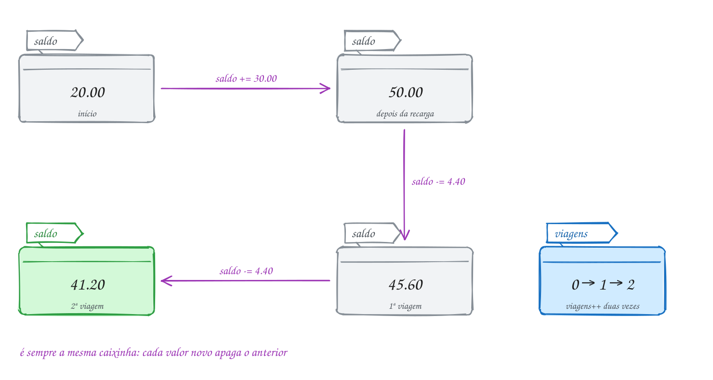
#include <stdio.h>
int main(void) {
double saldo = 20.00;
int viagens = 0;
saldo += 30.00; // recarga: saldo = saldo + 30.00
saldo -= 4.40; // 1ª viagem
viagens++; // viagens = viagens + 1
saldo -= 4.40; // 2ª viagem
viagens++;
printf("Saldo: R$ %.2f depois de %d viagens\n", saldo, viagens);
int antes = viagens++; // pós: usa o 2, depois soma (viagens vira 3)
int depois = ++viagens; // pré: soma primeiro (vira 4), depois usa o 4
printf("antes = %d, depois = %d, viagens = %d\n", antes, depois, viagens);
return 0;
}
// Saída:
// Saldo: R$ 41.20 depois de 2 viagens
// antes = 2, depois = 4, viagens = 4
Cada atualização é um retângulo sobre as mesmas duas variáveis. No módulo 03,
esses passos viram laço, com += e ++ como acumulador e contador:
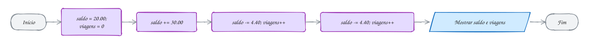
Exemplo A017 · Vagas que descem, senhas que sobem (até de letra)
#include <stdio.h>
int main(void) {
// -- conta para baixo: cada carro que entra ocupa uma vaga
int vagas = 3;
vagas--; // 2
vagas--; // 1
printf("Vagas livres: %d\n", vagas);
// ++ num char: o char é número, então ++ vai para a próxima letra
char fila = 'A';
int senha = 41;
printf("Chamando %c%02d\n", fila, senha);
senha++;
printf("Chamando %c%02d\n", fila, senha);
fila++; // 'A' (65) vira 'B' (66)
senha = 1; // a fila nova recomeça do 1
printf("Chamando %c%02d\n", fila, senha);
// /= com int faz divisão inteira: a moeda ímpar some
int moedas = 25;
moedas /= 2;
printf("Cada irmão fica com %d moedas\n", moedas);
// -= com double: o desconto sai do valor que já está lá
double conta = 120.00;
conta -= 15.50; // cupom
conta -= conta * 0.10; // mais 10% sobre o que sobrou
printf("Conta final: R$ %.2f\n", conta);
return 0;
}
// Saída:
// Vagas livres: 1
// Chamando A41
// Chamando A42
// Chamando B01
// Cada irmão fica com 12 moedas
// Conta final: R$ 94.05
gcc ~/LPEDC/material/A017.c -o ~/LPEDC/material/A017 && ~/LPEDC/material/A017
Exemplo A018 · Pré, pós e o operador que vale para a conta inteira
#include <stdio.h>
int main(void) {
// pós-incremento: a expressão vale o valor ANTIGO
int x = 5;
int y = x++; // y = 5, x = 6
printf("x++ : y = %d, x = %d\n", y, x);
// pré-incremento: a expressão vale o valor NOVO
x = 5;
y = ++x; // x = 6, y = 6
printf("++x : y = %d, x = %d\n", y, x);
// o operador composto age sobre TUDO o que está à direita
int pontos = 10, bonus = 3;
pontos *= bonus + 1; // pontos = pontos * (bonus + 1) = 40
printf("pontos = %d\n", pontos);
// a atribuição também é uma expressão: vale o valor guardado
int a, b, c;
a = b = c = 7; // c = 7, depois b = 7, depois a = 7
printf("a = %d, b = %d, c = %d\n", a, b, c);
// os mesmos operadores com double e com resto
double preco = 80.0;
preco *= 0.9; // 10% de desconto: 72.00
int segundos = 135;
segundos %= 60; // sobra 15
printf("preço = %.2f, segundos = %d\n", preco, segundos);
return 0;
}
// Saída:
// x++ : y = 5, x = 6
// ++x : y = 6, x = 6
// pontos = 40
// a = 7, b = 7, c = 7
// preço = 72.00, segundos = 15
gcc ~/LPEDC/material/A018.c -o ~/LPEDC/material/A018 && ~/LPEDC/material/A018
Exercício E049 · ★☆☆
Escreva um programa com pontos = 100, vidas = 3, moedas = 20, tempo = 90 e fase = 3 (int). Atualize cada um usando só operadores compostos e ++ ou --: pontos ganha 10, vidas perde 1, moedas dobra, tempo cai pela metade e fase sobe 1. Mostre tudo numa linha só.
Saída esperada:
pontos 110, vidas 2, moedas 40, tempo 45, fase 4
Exercício E051 · ★★☆
O cofrinho digital começa vazio. Use uma variável saldo e os operadores compostos para registrar o mês, mostrando o saldo depois de cada passo: guarda R$ 15.00, guarda R$ 20.00, guarda R$ 12.50, tira R$ 30.00 para um presente e, no fim do mês, rende 1% (multiplique por 1.01). Conte também quantos depósitos foram feitos, com ++.
Saída esperada:
Depósito 1: R$ 15.00
Depósito 2: R$ 35.00
Depósito 3: R$ 47.50
Presente: R$ 17.50
Rendimento: R$ 17.68
3 depósitos
Exercício E052 · ★★☆
Escreva um programa com x = 10 e y = 3 (int). Aplique em sequência, uma depois da outra, x *= y + 1, x -= y - 1, x /= y + 1 e x %= y + 2, mostrando a instrução e o novo valor de x depois de cada uma. Depois, volte x para 10 e mostre x * 2 + y (só no printf, sem guardar) e x *= 2 + y (guardando em x), para ver que são contas diferentes.
Saída esperada:
x *= y + 1 -> 40
x -= y - 1 -> 38
x /= y + 1 -> 9
x %= y + 2 -> 4
x * 2 + y = 23
x *= 2 + y -> 50
Exercício E054 · ★★★
O placar está invertido: casa = 2 e visitante = 5, e o certo é o contrário. Escreva um programa que troque os valores SEM usar uma terceira variável, só com += e -= (e, se precisar, um = simples), e mostre o placar certo.
Saída esperada:
Casa 5 x 2 Visitante
O C tem operadores para as quatro operações e para o resto, e parou aí. Não há operador de potência, de raiz nem de arredondamento. Mesmo assim, muita conta do dia a dia precisa deles: a área de um círculo pede o raio ao quadrado, a distância entre dois pontos pede uma raiz, e saber quantas latas de tinta comprar pede arredondar para cima.
Pense na pizzaria: a grande, de 35 cm, custa R$ 59,90, e a média, de 25 cm, R$ 39,90. Duas médias dão mais pizza que uma grande? A intuição diz que não, mas a área cresce com o quadrado do raio. A conta mostra que duas médias somam 981,75 cm², um pouco mais que os 962,11 cm² da grande. Para fazer essa conta no C, você recorre a uma caixa de ferramentas pronta.
Essa caixa é a biblioteca de matemática, declarada no cabeçalho
<math.h>. Ela traz funções prontas, e quase todas recebem e devolvem
double (DEITEL; DEITEL, 2011, cap. 5). Uma função aqui é uma conta
com nome: você escreve o nome, passa os valores entre parênteses e recebe o
resultado no lugar da chamada. pow(2, 10) vale 1024, e você pode usar
essa chamada dentro de qualquer expressão, como usaria um número.
| Função | Faz | Exemplo | Resultado |
|---|---|---|---|
pow(x, y) |
x elevado a y | pow(2, 10) |
1024 |
sqrt(x) |
raiz quadrada | sqrt(144) |
12 |
fabs(x) |
valor absoluto de real | fabs(-7.5) |
7.5 |
floor(x) |
arredonda para baixo | floor(-2.3) |
-3 |
ceil(x) |
arredonda para cima | ceil(2.1) |
3 |
round(x) |
para o mais perto (o meio vai para longe do zero) | round(2.5) |
3 |
fmod(x, y) |
resto de divisão real | fmod(7.5, 2) |
1.5 |
sin, cos, tan |
trigonometria, em radianos | cos(0) |
1 |
O math.h, porém, só declara as funções: diz o nome, o que cada uma
recebe e o que devolve. Por isso sqrt(144) funciona mesmo com um int: o
compilador lê a declaração e converte o 144 para double. O código das
funções mora em outro lugar, na biblioteca libm, e o ligador (0001) só a
junta ao programa se você pedir com -lm no fim do comando do gcc (GNU,
s.d.). Sem isso, a compilação para com undefined reference to 'pow'. As
flags de estudo do curso já incluem o -lm.
Os três arredondamentos parecem iguais com números positivos e divergem com
os negativos. O floor sempre desce, rumo ao menos infinito:
floor(-2.3) é -3. O ceil sempre sobe: ceil(-2.7) é -2. O round vai
para o inteiro mais perto, e quando está bem no meio vai para longe do
zero: round(2.5) é 3 e round(-2.5) é -3 (DEITEL; DEITEL, 2011,
cap. 5). O cast do 0008 é uma quarta coisa: ele corta a parte
fracionária, e (int) -2.7 dá -2. Para "quantas latas preciso comprar", o
certo é o ceil: 2,78 latas viram 3.
Faltam dois detalhes que pegam desprevenido. O C padrão não define o
número pi. O M_PI, que aparece em muito código por aí, é uma extensão e
não existe com -std=c17; crie o seu com #define PI 3.14159265358979
(ISO/IEC, 2018). E o valor absoluto de inteiros, abs, não fica no
math.h, e sim no <stdlib.h>. Para números reais, a função é a fabs
(BACKES, 2013). Usar abs(-2.75) dá 2, porque o valor é convertido para
int antes; o -Wextra avisa.
[!WARNING]
pow(27, 1/3)dá 1, não 3:1/3é divisão inteira e vale 0, e todo número elevado a 0 é 1. Escreva1.0 / 3. Do mesmo modo,ceil(7 / 2)dá 3, não 4: oceilrecebe o 3 já cortado.
Duas pizzas médias de 25 cm dão mais pizza que uma grande de 35 cm? A área
cresce com o quadrado do raio: o diâmetro vira raio, pow eleva ao quadrado
e o resultado vezes pi dá a área:
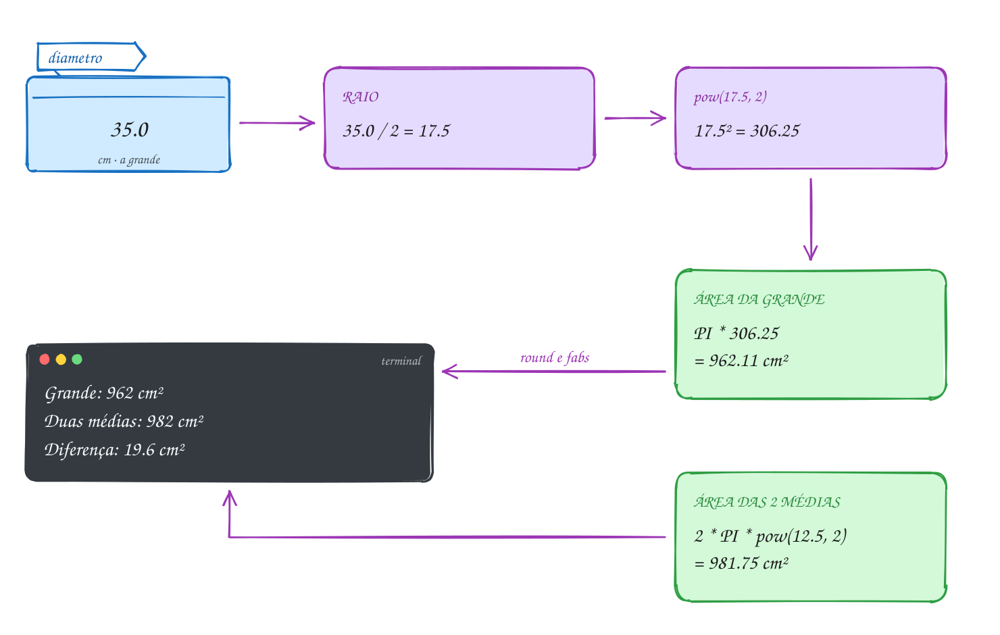
#include <stdio.h>
#include <math.h>
#define PI 3.14159265358979 // o C padrão não define o pi
int main(void) {
double diametro_grande = 35.0, diametro_media = 25.0; // cm
double preco_grande = 59.90, preco_medias = 2 * 39.90;
double area_grande = PI * pow(diametro_grande / 2, 2); // pi * r²
double area_medias = 2 * PI * pow(diametro_media / 2, 2);
printf("Grande: %.0f cm² por R$ %.2f\n", round(area_grande), preco_grande);
printf("Duas médias: %.0f cm² por R$ %.2f\n", round(area_medias), preco_medias);
printf("Diferença: %.1f cm²\n", fabs(area_grande - area_medias));
printf("R$ por 100 cm²: grande %.2f, médias %.2f\n",
preco_grande / area_grande * 100, preco_medias / area_medias * 100);
// a pizza única com a mesma área das duas médias: r = raiz(área / pi)
double diametro_igual = 2 * sqrt(area_medias / PI);
printf("Duas médias = uma pizza de %.1f cm\n", diametro_igual);
return 0;
}
// Saída:
// Grande: 962 cm² por R$ 59.90
// Duas médias: 982 cm² por R$ 79.80
// Diferença: 19.6 cm²
// R$ por 100 cm²: grande 6.23, médias 8.13
// Duas médias = uma pizza de 35.4 cm
Duas médias dão um pouco mais de pizza, mas cada 100 cm² da grande sai quase
R$ 2 mais barato. No fluxograma, pow(...) e sqrt(...) entram nas contas
como qualquer valor:
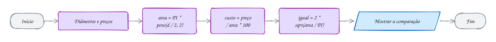
Exemplo A019 · A escada no muro e o posto na estrada
#include <stdio.h>
#include <math.h>
#define PI 3.14159265358979
int main(void) {
// sin e cos trabalham em radianos: converta com graus * PI / 180
double escada = 5.0; // metros
double graus = 60.0; // ângulo da escada com o chão
double radianos = graus * PI / 180;
printf("Altura no muro: %.2f m\n", escada * sin(radianos));
printf("Pé da escada a %.2f m do muro\n", escada * cos(radianos));
// fmod: o resto de uma divisão entre reais (o % só aceita inteiros)
double km = 31.0, entre_postos = 7.5;
double desde_ultimo = fmod(km, entre_postos); // 31 - 4 * 7.5 = 1.0
printf("Último posto há %.1f km; próximo em %.1f km\n",
desde_ultimo, entre_postos - desde_ultimo);
// fabs: a distância entre dois valores, não importa a ordem da conta
double tarde = 14.5, madrugada = -3.0;
printf("Variação no dia: %.1f graus\n", fabs(madrugada - tarde));
return 0;
}
// Saída:
// Altura no muro: 4.33 m
// Pé da escada a 2.50 m do muro
// Último posto há 1.0 km; próximo em 6.5 km
// Variação no dia: 17.5 graus
gcc ~/LPEDC/material/A019.c -o ~/LPEDC/material/A019 -lm && ~/LPEDC/material/A019
Exemplo A020 · Arredondar para cima, para baixo e para o mais perto
#include <stdio.h>
#include <math.h>
int main(void) {
printf(" x | floor | ceil | round | (int)\n");
printf("%5.1f | %5.0f | %5.0f | %5.0f | %5d\n", 2.4, floor(2.4), ceil(2.4), round(2.4), (int) 2.4);
printf("%5.1f | %5.0f | %5.0f | %5.0f | %5d\n", 2.5, floor(2.5), ceil(2.5), round(2.5), (int) 2.5);
printf("%5.1f | %5.0f | %5.0f | %5.0f | %5d\n", -2.5, floor(-2.5), ceil(-2.5), round(-2.5), (int) -2.5);
printf("%5.1f | %5.0f | %5.0f | %5.0f | %5d\n", -2.6, floor(-2.6), ceil(-2.6), round(-2.6), (int) -2.6);
// ceil na vida real: quantas latas de tinta para 50 m², se uma cobre 18 m²?
double area = 50.0, por_lata = 18.0;
printf("Latas: %.2f -> compre %.0f\n", area / por_lata, ceil(area / por_lata));
// potência e raiz: pow também tira raiz com expoente fracionário
printf("pow(2, 10) = %.0f, sqrt(2) = %.4f, raiz cúbica de 27 = %.1f\n",
pow(2, 10), sqrt(2), pow(27, 1.0 / 3));
// arredondar para 2 casas de verdade (não só na tela)
double preco = 7.4567;
double preco_2casas = round(preco * 100) / 100;
printf("%.4f vira %.4f\n", preco, preco_2casas);
return 0;
}
// Saída:
// x | floor | ceil | round | (int)
// 2.4 | 2 | 3 | 2 | 2
// 2.5 | 2 | 3 | 3 | 2
// -2.5 | -3 | -2 | -3 | -2
// -2.6 | -3 | -2 | -3 | -2
// Latas: 2.78 -> compre 3
// pow(2, 10) = 1024, sqrt(2) = 1.4142, raiz cúbica de 27 = 3.0
// 7.4567 vira 7.4600
gcc ~/LPEDC/material/A020.c -o ~/LPEDC/material/A020 -lm && ~/LPEDC/material/A020
Exercício E055 · ★☆☆
A loja anuncia uma TV com a tela de 121.8 cm de largura e 68.5 cm de altura. TVs são vendidas pela diagonal, em polegadas (1 polegada = 2.54 cm). Calcule a diagonal com Pitágoras e mostre em cm e em polegadas.
Saída esperada:
Diagonal: 139.74 cm
TV de 55 polegadas
gcc ~/LPEDC/material/E055.c -o ~/LPEDC/material/E055 -lm && ~/LPEDC/material/E055
Exercício E057 · ★★☆
Você vai pintar 3 paredes de 4.0 m por 2.7 m, com 2 demãos. Uma lata de tinta cobre 25 m² e custa R$ 89.90. Lata não se vende pela metade. Calcule a área total a pintar, quantas latas comprar e quanto vai gastar.
Saída esperada:
Área com 2 demãos: 64.80 m²
Latas: 2.59 -> comprar 3
Total: R$ 269.70
gcc ~/LPEDC/material/E057.c -o ~/LPEDC/material/E057 -lm && ~/LPEDC/material/E057
Exercício E058 · ★★☆
Você aplica R$ 1000.00 num investimento que rende 1% ao mês, com juros compostos (juros sobre juros). O montante depois de n meses é capital * (1 + taxa) elevado a n. Mostre o montante e o rendimento depois de 12 e de 24 meses. Para comparar, mostre também quanto teria em 24 meses com juros simples (1% do capital por mês, sem juros sobre juros) e a diferença entre os dois em 24 meses.
Saída esperada:
12 meses: R$ 1126.83 (rendeu R$ 126.83)
24 meses: R$ 1269.73 (rendeu R$ 269.73)
Juros simples, 24 meses: R$ 1240.00
Diferença: R$ 29.73
gcc ~/LPEDC/material/E058.c -o ~/LPEDC/material/E058 -lm && ~/LPEDC/material/E058
Exercício E060 · ★★★
Do alto de uma laje de 1.5 m, você joga uma bola para cima a 20 m/s. Desprezando o ar, a altura depois de t segundos é h(t) = -5t² + 20t + 1.5. Calcule:
a) o instante em que a bola chega ao chão (h = 0), com a fórmula de
Bhaskara: t = (-b - raiz(delta)) / (2a), com delta = b² - 4ac;
b) o instante da altura máxima, t = -b / (2a), e a altura nesse instante.
Saída esperada:
Delta: 430.00
Chega ao chão em 4.07 s
Altura máxima: 21.50 m, em 2.00 s
gcc ~/LPEDC/material/E060.c -o ~/LPEDC/material/E060 -lm && ~/LPEDC/material/E060
Cada assunto do módulo ensinou uma peça isolada: variável, tipo, constante,
printf, scanf, aritmética, conversão, atribuição e math.h. Um problema
de verdade pede todas ao mesmo tempo, e a dificuldade passa a ser outra:
decidir por onde começar e em que ordem montar as peças. Ajuda ter um
jeito fixo de organizar o raciocínio antes de escrever a primeira linha.
Pense na conta de luz de uma república. Todo mês alguém pega a fatura, faz a divisão no celular e manda no grupo quanto cada um deve. Antes de abrir a calculadora, essa pessoa já sabe três coisas: o que precisa olhar (as duas leituras do relógio e quantos moram na casa), que conta fazer e o que mandar no grupo. O programa segue o mesmo roteiro.
Esse roteiro tem nome: entrada → processamento → saída. Antes de
codificar, separe o que o programa lê, o que ele calcula a partir disso e o
que ele mostra no fim (LEAL, 2016). A entrada vira variáveis lidas com
scanf; o processamento vira expressões e atribuições; a saída vira
printf. Com essa separação feita no papel, cada parte do código tem um
papel claro, e um erro fica mais fácil de achar: você sabe se procura na
leitura, na conta ou na hora de mostrar.
Todos os programas deste módulo têm a mesma forma, chamada estrutura sequencial: os passos são sempre os mesmos e rodam sempre na mesma ordem, de cima para baixo, sem decidir nada e sem repetir nada (CARVALHO, 2010). Isso é também um limite. O programa da conta de luz não confere se a leitura atual é maior que a anterior, e não sabe repetir a conta para vários meses. Conferir é assunto do módulo 02, com as condicionais; repetir é do módulo 03, com os laços.
O programa do exemplo junta as peças assim. A tarifa e a taxa fixa viram
constantes com #define (0004), para mudar num lugar só. As leituras do
relógio são int e o dinheiro é double (0002). O scanf leva & em
cada variável, e o seu retorno fica guardado (0006). No processamento
entram o += (0009), um cast para a média por dia não virar divisão
inteira (0008) e o ceil (0010) para arredondar o centavo para cima, já que
ninguém quer pagar um centavo a menos e deixar a conta descoberta. Na saída,
o printf usa largura e duas casas para alinhar as colunas (0005).
Como saber se a fórmula está certa antes de confiar nela? Com o teste de mesa: você executa o programa no papel, uma linha de cada vez, e anota numa tabela o valor de cada variável depois de cada passo (CARVALHO, 2010). O teste de mesa obriga você a fazer a conta que o computador faria, com os tipos que ele usaria, e por isso pega a divisão inteira, o arredondamento no lugar errado e a variável que nunca recebeu valor. O exemplo abaixo traz um teste de mesa completo para você acompanhar.
[!WARNING] Sem o cast,
consumo / DIASseria257 / 30entre doisinte daria 8. A ordem também importa: com oceilantes do* 100,ceil(76.4133)daria R$ 77. Faça o teste de mesa antes de confiar numa fórmula.
A conta de luz de uma república com três moradores. Entram as duas leituras do relógio e os moradores; o consumo é 257 kWh, a conta é R$ 229,24 e cada um paga R$ 76,42, com o centavo para cima:
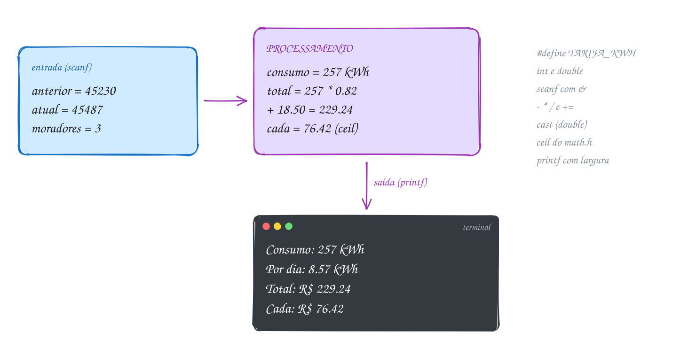
#include <stdio.h>
#include <math.h>
#define TARIFA_KWH 0.82 // R$ por kWh
#define ILUMINACAO 18.50 // taxa fixa de iluminação pública
#define DIAS 30
int main(void) {
int anterior, atual, moradores;
// entrada
printf("Leitura anterior (kWh): ");
scanf("%d", &anterior);
printf("Leitura atual (kWh): ");
scanf("%d", &atual);
printf("Moradores: ");
int lidos = scanf("%d", &moradores);
// processamento
int consumo = atual - anterior;
double total = consumo * TARIFA_KWH;
total += ILUMINACAO;
double por_dia = (double) consumo / DIAS;
double cada = ceil(total / moradores * 100) / 100; // centavo para cima
// saída
printf("\n%-18s %8d kWh\n", "Consumo:", consumo);
printf("%-18s %8.2f kWh\n", "Por dia:", por_dia);
printf("%-18s R$ %8.2f\n", "Total da conta:", total);
printf("%-18s R$ %8.2f\n", "Cada morador:", cada);
printf("(o último scanf leu %d item)\n", lidos);
return 0;
}
// Exemplo de execução:
// Leitura anterior (kWh): 45230
// Leitura atual (kWh): 45487
// Moradores: 3
//
// Consumo: 257 kWh
// Por dia: 8.57 kWh
// Total da conta: R$ 229.24
// Cada morador: R$ 76.42
// (o último scanf leu 1 item)
Teste de mesa com a entrada 45230, 45487 e 3; as colunas mostram as variáveis depois de cada instrução:
| Instrução | consumo | total | por_dia | cada |
|---|---|---|---|---|
consumo = atual - anterior |
257 | |||
total = consumo * TARIFA_KWH |
257 | 210.74 | ||
total += ILUMINACAO |
257 | 229.24 | ||
por_dia = (double) consumo / DIAS |
257 | 229.24 | 8.5666... | |
cada = ceil(total / moradores * 100) / 100 |
257 | 229.24 | 8.5666... | 76.42 |
Na última linha: 229,24 ÷ 3 = 76,4133...; vezes 100, 7641,33...; o ceil
sobe para 7642; dividido por 100, 76,42. Três vezes 76,42 dá 229,26: sobram
dois centavos, mas a conta fica paga.
Entrada, quatro contas e saída, sem nenhum losango:
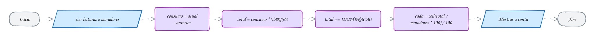
Exemplo A021 · Quantas caixas de piso comprar
#include <stdio.h>
#include <math.h>
#define PERDA 1.10 // 10% a mais para os recortes
#define M2_POR_CAIXA 2.5 // cada caixa cobre 2,5 m²
int main(void) {
double largura = 0, comprimento = 0, preco_caixa = 0;
// entrada: o retorno de cada scanf vai somando no total de leituras
printf("Largura do cômodo (m): ");
int leituras = scanf("%lf", &largura);
printf("Comprimento (m): ");
leituras += scanf("%lf", &comprimento);
printf("Preço da caixa (R$): ");
leituras += scanf("%lf", &preco_caixa);
// processamento
double area = largura * comprimento;
double area_compra = area;
area_compra *= PERDA;
int caixas = (int) ceil(area_compra / M2_POR_CAIXA); // caixa não vem pela metade
double total = caixas * preco_caixa;
double sobra = caixas * M2_POR_CAIXA - area_compra;
// saída: rótulos com acento direto no formato, porque a largura do %s
// conta bytes, e cada letra acentuada ocupa 2
printf("\nÁrea do cômodo: %8.2f m²\n", area);
printf("Com 10%% de perda: %8.2f m²\n", area_compra);
printf("Caixas: %8d\n", caixas);
printf("Sobra na última: %8.2f m²\n", sobra);
printf("Total (R$): %8.2f\n", total);
printf("(leituras certas: %d de 3)\n", leituras);
return 0;
}
// Exemplo de execução:
// Largura do cômodo (m): 3.2
// Comprimento (m): 4.5
// Preço da caixa (R$): 89.90
//
// Área do cômodo: 14.40 m²
// Com 10% de perda: 15.84 m²
// Caixas: 7
// Sobra na última: 1.66 m²
// Total (R$): 629.30
// (leituras certas: 3 de 3)
//
// Teste: printf '3.2\n4.5\n89.90\n' | ~/LPEDC/rodar <este arquivo>
// Com uma letra no preço, printf '3.2\n4.5\nabc\n' | ~/LPEDC/rodar <este arquivo>
// mostra "(leituras certas: 2 de 3)" e o total sai 0.00: o preço ficou com
// o valor inicial. No módulo 02, com o if, o programa vai poder parar ali.
gcc ~/LPEDC/material/A021.c -o ~/LPEDC/material/A021 -lm && ~/LPEDC/material/A021
Exemplo A022 · Rachando a gasolina da viagem
#include <stdio.h>
#include <math.h>
#define PRECO_LITRO 6.19
int main(void) {
double distancia, consumo, pedagio;
int pessoas;
printf("Distância (km): ");
scanf("%lf", &distancia);
printf("Consumo do carro (km/l): ");
scanf("%lf", &consumo);
printf("Pedágios (R$): ");
scanf("%lf", &pedagio);
printf("Pessoas no carro: ");
scanf("%d", &pessoas);
double litros = distancia / consumo;
double gasolina = litros * PRECO_LITRO;
double total = gasolina + pedagio;
double cada = ceil(total / pessoas); // arredonda para o real de cima
// a 80 km/h, quanto tempo de estrada? em minutos inteiros
int minutos = (int) round(distancia / 80 * 60);
printf("\nLitros: %.1f\n", litros);
printf("Gasolina: R$ %.2f + pedágios R$ %.2f = R$ %.2f\n", gasolina, pedagio, total);
printf("Cada um manda um Pix de R$ %.0f\n", cada);
printf("Tempo a 80 km/h: %dh%02d\n", minutos / 60, minutos % 60);
return 0;
}
// Exemplo de execução:
// Distância (km): 430
// Consumo do carro (km/l): 12.5
// Pedágios (R$): 47.80
// Pessoas no carro: 4
//
// Litros: 34.4
// Gasolina: R$ 212.94 + pedágios R$ 47.80 = R$ 260.74
// Cada um manda um Pix de R$ 66
// Tempo a 80 km/h: 5h23
//
// Teste: printf '430\n12.5\n47.80\n4\n' | ~/LPEDC/rodar <este arquivo>
gcc ~/LPEDC/material/A022.c -o ~/LPEDC/material/A022 -lm && ~/LPEDC/material/A022
Exercício E061 · ★☆☆
Escreva a calculadora de IMC (índice de massa corporal): lê o peso em kg e a altura em metros, sem mostrar perguntas, e mostra o IMC com uma casa. A fórmula é peso / altura².
Entrada:
72.5
1.75
Saída esperada:
IMC: 23.7
gcc ~/LPEDC/material/E061.c -o ~/LPEDC/material/E061 -lm && ~/LPEDC/material/E061
Exercício E063 · ★★☆
Quanto tempo leva para baixar um jogo? Leia o tamanho em GB e a velocidade da internet em Mbps (megabits por segundo), sem mostrar perguntas, e mostre o tempo em segundos, e em minutos e segundos. Atenção às unidades: 1 GB = 1000 MB, 1 byte = 8 bits. Arredonde os segundos totais para o inteiro mais próximo.
Entrada:
4.7
100
Saída esperada:
Tempo: 376 s = 6 min 16 s
gcc ~/LPEDC/material/E063.c -o ~/LPEDC/material/E063 -lm && ~/LPEDC/material/E063
Exercício E064 · ★★☆
O celular custa R$ 1299.00 e a loja parcela em 12 vezes com juros de 1.99% ao mês. A parcela fixa (tabela Price) é
parcela = valor * taxa / (1 - (1 + taxa) elevado a -n)
Calcule a parcela, arredonde para centavos de verdade (não só na tela) e mostre o total pago e quanto foi de juros.
Saída esperada:
12x de R$ 122.76
Total: R$ 1473.12
Juros: R$ 174.12
gcc ~/LPEDC/material/E064.c -o ~/LPEDC/material/E064 -lm && ~/LPEDC/material/E064
Exercício E066 · ★★★
O app de entregas diz "chega em 135 minutos". Leia a hora atual (hh:mm) e os minutos de espera, sem mostrar perguntas, e mostre a hora da chegada no formato hh:mm e quantos dias depois de hoje ela cai. Sem if: só aritmética. Teste com os três casos abaixo.
Entrada:
22:45
135
Saída esperada:
Chega às 01:00, 1 dia(s) depois
Entrada:
08:10
50
Saída esperada:
Chega às 09:00, 0 dia(s) depois
Entrada:
23:59
2881
Saída esperada:
Chega às 00:00, 3 dia(s) depois
30 exercícios que misturam os assuntos do módulo, no ritmo da prova. Arquivos P0101.c a P0130.c, em material/; resoluções em _respostas/01-fundamentos/lista/.
Exercício P0101 · ★☆☆ · O plano trimestral da academia
A academia do bairro cobra R$ 119.90 por mês e uma matrícula de R$ 49.90, paga uma vez só. Escreva um programa que guarde esses dois valores e o número de meses (3) em variáveis e mostre o resumo do plano trimestral:
Saída esperada:
Mensalidade: R$ 119.90
Meses: 3
Total do plano: R$ 409.60
Exercício P0102 · ★☆☆ · Gasolina até Itacoatiara
De Manaus a Itacoatiara são 176 km pela AM-010. O carro faz 11.5 km por litro e a gasolina custa R$ 6.79. Escreva um programa que calcule quantos litros a viagem de ida gasta e quanto custa, com duas casas decimais:
Saída esperada:
Distância: 176 km
Litros: 15.30
Custo da ida: R$ 103.92
Resposta esperada: 15.30 litros e R$ 103.92.
Exercício P0103 · ★☆☆ · Minutos do plano de celular
A fatura do celular diz que você falou 437 minutos no mês. Complete o programa: troque os dois zeros pelas contas certas, usando só / e %, para mostrar o tempo em horas e minutos:
Saída esperada:
437 minutos = 7 h e 17 min
Exercício P0104 · ★☆☆ · O termômetro importado
O termômetro que veio de fora mostra 98.6 °F. O programa abaixo deveria converter para Celsius com C = 5 / 9 × (F − 32), mas mostra 0.0. O erro está na conta, de propósito. Conserte só a linha da conversão:
Saída esperada:
98.6 F = 37.0 C
Exercício P0105 · ★☆☆ · O painel de senhas do banco
O painel do banco está na senha 41. Escreva um programa com int senha = 41; e, nesta ordem: guarde em chamada o valor de senha++; depois guarde em proxima o valor de ++senha. Mostre as três variáveis:
Saída esperada:
Chamada: 41
Próxima: 43
Senha no painel: 43
Resposta esperada: 41, 43 e 43.
Exercício P0106 · ★☆☆ · Ônibus da excursão
A escola vai levar 158 alunos ao Museu da Amazônia em ônibus de 44 lugares. Escreva um programa que mostre quantos ônibus saem lotados, quantos alunos vão no último ônibus e quantos ônibus a escola precisa alugar. Sem if: só / e %.
Saída esperada:
Ônibus lotados: 3
Alunos no último: 26
Ônibus para alugar: 4
Resposta esperada: 3, 26 e 4.
Exercício P0107 · ★☆☆ · Os cocos da feira
Na feira, três cocos a R$ 7.99 dão R$ 23.97. O feirante só aceita reais inteiros e quer ver quatro jeitos de chegar num valor sem centavos. Mostre o total e o resultado de (int), round, floor e ceil sobre ele:
Saída esperada:
Total: R$ 23.97
(int): 23
round: 24
floor: 23
ceil: 24
Resposta esperada: 23, 24, 23 e 24.
gcc ~/LPEDC/material/P0107.c -o ~/LPEDC/material/P0107 -lm && ~/LPEDC/material/P0107
Exercício P0108 · ★☆☆ · O Pix do país inteiro
Suponha que 160 milhões de pessoas façam, cada uma, um Pix de R$ 25 no mesmo dia. Escreva um programa que mostre o maior int, o total em reais guardado num long long e quantas vezes o total é maior que o INT_MAX (divisão inteira):
Saída esperada:
Maior int: 2147483647
Total do dia: R$ 4000000000
O total é 1 vez(es) o INT_MAX
Exercício P0109 · ★☆☆ · Quadro de partidas da rodoviária
O painel da rodoviária mostra destino, horário e preço. Guarde cada hora e cada minuto em int (9 e 5, 13 e 40, 22 e 0) e monte o quadro com os destinos alinhados à esquerda em 12 colunas, as horas com dois dígitos e os preços alinhados à direita em 7 colunas:
Saída esperada:
Destino Hora Preço
Manacapuru 09:05 25.50
Iranduba 13:40 9.80
Presidente 22:00 112.00
Resposta esperada: as três linhas acima, com 09:05, 13:40 e 22:00.
Exercício P0110 · ★☆☆ · Açaí no quilo
A barraca vende açaí no quilo. Escreva um programa que leia o peso em kg e o preço do quilo e mostre quanto a pessoa paga. Um exemplo de interação:
Saída esperada:
Peso (kg): 1.5
Preço do quilo: 28.00
Total: R$ 42.00
Resposta esperada: com 1.5 e 28.00, Total: R$ 42.00.
Exercício P0111 · ★★☆ · Quanto tempo leva o backup
O backup das fotos da família vai levar 200000 segundos. Escreva um programa que mostre esse tempo em dias, horas, minutos e segundos, só com / e %:
Saída esperada:
200000 s = 2 dia(s), 7 h, 33 min e 20 s
Exercício P0112 · ★★☆ · Os dígitos do medidor de luz
O medidor de luz da casa marca 4827 kWh. Escreva um programa que separe os quatro dígitos só com / e % e mostre cada um, a soma e o produto deles:
Saída esperada:
Dígitos: 4 8 2 7
Soma: 21
Produto: 448
Resposta esperada: soma 21 e produto 448.
Exercício P0113 · ★★☆ · A média ponderada do concurso
No concurso, a prova objetiva tem peso 2 e a discursiva tem peso 3. Com 6.0 e 8.0, a média deveria ser (6.0 × 2 + 8.0 × 3) / 5 = 7.2, mas o programa abaixo mostra 16.8. O erro é de precedência e está lá de propósito. Conserte só com parênteses:
Saída esperada:
Média final: 7.2
Exercício P0114 · ★★☆ · O barco para Parintins
De Manaus a Parintins o barco percorre 369 km a 25 km/h. Escreva um programa que calcule o tempo em horas (double), converta para minutos arredondando com round e mostre em horas e minutos:
Saída esperada:
Tempo: 14.76 h
Em minutos: 886
Chegada em 14 h e 46 min de viagem
Resposta esperada: 886 minutos, 14 h e 46 min.
gcc ~/LPEDC/material/P0114.c -o ~/LPEDC/material/P0114 -lm && ~/LPEDC/material/P0114
Exercício P0115 · ★★☆ · O pace da corrida de rua
Você correu os 10 km da corrida de rua em 52 min e 30 s. Escreva um programa que mostre o pace (tempo por km) no formato m:ss e a velocidade média em km/h:
Saída esperada:
Tempo total: 3150 s
Pace: 5:15 por km
Velocidade: 11.43 km/h
Resposta esperada: Pace: 5:15 e 11.43 km/h.
Exercício P0116 · ★★☆ · O centavo que sumiu
O caixa da padaria guarda o preço em reais (double) e converte para centavos inteiros antes de mandar para a maquininha. Com o pão a R$ 4.35, a maquininha recebe 434 centavos. O programa abaixo tem esse erro de propósito: conserte a conversão para a maquininha receber 435, e mostre os dois valores:
Saída esperada:
Preço: R$ 4.35
Centavos com (int): 434
Centavos com round: 435
Resposta esperada: 434 com (int) e 435 com round.
gcc ~/LPEDC/material/P0116.c -o ~/LPEDC/material/P0116 -lm && ~/LPEDC/material/P0116
Exercício P0117 · ★★☆ · O ângulo dos ponteiros
Num relógio de ponteiros, o das horas anda 30 graus por hora e mais 0.5 grau por minuto; o dos minutos anda 6 graus por minuto. Escreva um programa que mostre o ângulo entre os ponteiros às 14:20 e às 9:45, usando fabs:
Saída esperada:
14:20 -> 50.0 graus
09:45 -> 22.5 graus
Resposta esperada: 50.0 e 22.5 graus.
gcc ~/LPEDC/material/P0117.c -o ~/LPEDC/material/P0117 -lm && ~/LPEDC/material/P0117
Exercício P0118 · ★★☆ · A playlist da viagem
Três músicas da playlist duram 3:45, 4:12 e 5:03 (minutos:segundos). Guarde cada minuto e cada segundo num int e mostre a duração total e a média por música, as duas no formato m:ss:
Saída esperada:
Total: 13:00
Média por música: 4:20
Resposta esperada: Total 13:00 e média 4:20.
Exercício P0119 · ★★☆ · A caixa d'água da casa
A caixa d'água cilíndrica tem raio de 0.6 m e altura de 1.2 m. A casa gasta 180 litros por dia. Escreva um programa com const double PI = 3.14159265; que mostre o volume em m³, a capacidade em litros inteiros (corte com cast), por quantos dias completos a caixa cheia dura e quantos litros sobram:
Saída esperada:
Volume: 1.3572 m3
Capacidade: 1357 litros
Dura 7 dias completos e sobram 97 litros
Resposta esperada: 1357 litros, 7 dias e 97 litros de sobra.
Exercício P0120 · ★★☆ · A média da ida e volta
Você vai de carro ao sítio, 120 km, a 60 km/h, e volta pelos mesmos 120 km a 40 km/h. Muita gente diz que a média foi 50 km/h. Escreva um programa que calcule o tempo de cada trecho, o tempo total e a velocidade média de verdade (distância total / tempo total):
Saída esperada:
Ida: 2.0 h
Volta: 3.0 h
Total: 240 km em 5.0 h
Velocidade média: 48.0 km/h
Exercício P0121 · ★★★ · Os dígitos verificadores do CPF
O CPF tem 9 dígitos e 2 verificadores. O 1º verificador: multiplique os 9 dígitos pelos pesos 10, 9, 8, ..., 2, some e pegue o resto r da divisão por 11; se r < 2 o dígito é 0, senão é 11 − r. O 2º usa os 9 dígitos mais o 1º verificador, com pesos 11, 10, ..., 2, e a mesma regra. Escreva um programa que, sem if, calcule os verificadores de 123456789 e mostre o CPF formatado:
Saída esperada:
Soma 1: 210, resto 1, dígito 0
Soma 2: 255, resto 2, dígito 9
CPF: 123.456.789-09
Exercício P0122 · ★★★ · Em que dia da semana cai a prova
Dá para descobrir o dia da semana de qualquer data só com contas inteiras. Com a = (14 − mês) / 12, y = ano − a e m = mês + 12a − 2, o dia da semana é (dia + y + y/4 − y/100 + y/400 + 31m/12) % 7, com 0 = domingo, 1 = segunda, ..., 6 = sábado. Escreva um programa que mostre o número do dia da semana da prova do PPGI (27/11/2026) e do Natal de 2026 (25/12/2026):
Saída esperada:
27/11/2026 -> dia 5 da semana (0 = domingo)
25/12/2026 -> dia 5 da semana (0 = domingo)
Resposta esperada: as duas datas caem numa sexta-feira (5).
Exercício P0123 · ★★★ · Quantos dias faltam para a prova
Para contar os dias entre duas datas, transforme cada uma num número de dias desde uma data fixa e subtraia. Com a = (14 − mês) / 12, y = ano − a e m = mês + 12a − 3, o número do dia é dia + (153m + 2)/5 + 365y + y/4 − y/100 + y/400. Escreva um programa que mostre quantos dias há de 15/08/2026 até a prova, em 27/11/2026, e quantas semanas completas e dias isso dá:
Saída esperada:
De 15/08/2026 a 27/11/2026: 104 dias
São 14 semanas e 6 dias
Resposta esperada: 104 dias, 14 semanas e 6 dias.
Exercício P0124 · ★★★ · O dígito do código de barras
O código de barras dos produtos (EAN-13) tem 12 dígitos e um verificador. Multiplique os dígitos, da esquerda para a direita, alternando os pesos 1 e 3; o verificador é (10 − soma % 10) % 10. Escreva um programa que guarde 789123456789 num long long, calcule o verificador sem if e mostre o código completo:
Saída esperada:
Soma ponderada: 135
Verificador: 5
Código: 7891234567895
Exercício P0125 · ★★★ · O byte escrito com zeros e uns
O manual do sensor diz que o registro de configuração deve receber o byte 10110110. Guarde isso num int como se fosse decimal (int bits = 10110110;), separe cada "dígito" com / e % por 10, monte o valor de verdade com os pesos 128, 64, ..., 1 e mostre em decimal, hexadecimal e octal:
Saída esperada:
Bits: 10110110
Decimal: 182
Hexadecimal: 0xB6
Octal: 0266
Resposta esperada: 182, 0xB6 e 0266.
Exercício P0126 · ★★★ · Previsão da maratona
A fórmula de Riegel prevê o tempo numa prova mais longa a partir de uma mais curta: T2 = T1 × (D2 / D1) elevado a 1.06. Você correu 10 km em 50 min. Escreva um programa que preveja o tempo na maratona (42.195 km), arredonde para segundos inteiros e mostre no formato h:mm:ss, além do pace previsto:
Saída esperada:
Previsão: 13801 s
Maratona em 3:50:01
Pace previsto: 5:27 por km
gcc ~/LPEDC/material/P0126.c -o ~/LPEDC/material/P0126 -lm && ~/LPEDC/material/P0126
Exercício P0127 · ★★★ · Fibonacci sem laço
Na sequência de Fibonacci (0, 1, 1, 2, 3, 5, 8, ...), o termo n é o inteiro mais perto de φⁿ / √5, onde φ = (1 + √5) / 2 é a razão áurea (fórmula de Binet). Escreva um programa que calcule φ com sqrt e mostre os termos 10, 30 e 40 com pow e round, guardando cada um num long:
Saída esperada:
phi = 1.6180339887
F(10) = 55
F(30) = 832040
F(40) = 102334155
Resposta esperada: 55, 832040 e 102334155.
gcc ~/LPEDC/material/P0127.c -o ~/LPEDC/material/P0127 -lm && ~/LPEDC/material/P0127
Exercício P0128 · ★★★ · De Manaus a Belém em linha reta
A distância em linha reta entre dois pontos da Terra sai da fórmula de haversine. Com as latitudes e longitudes em radianos, faça a = sin²(Δlat/2) + cos(lat1)·cos(lat2)·sin²(Δlon/2) e d = 2 · R · asin(√a), com R = 6371 km. Manaus fica em (−3.1190, −60.0217) e Belém em (−1.4558, −48.4902), em graus. Escreva um programa, com #define PI 3.14159265358979, que mostre a distância arredondada para km:
Saída esperada:
Manaus: -3.1190, -60.0217
Belém: -1.4558, -48.4902
Distância: 1294 km
gcc ~/LPEDC/material/P0128.c -o ~/LPEDC/material/P0128 -lm && ~/LPEDC/material/P0128
Exercício P0129 · ★★★ · A data da Páscoa
A data da Páscoa muda todo ano, mas sai de uma receita só de contas inteiras (algoritmo de Meeus). Para o ano A: a = A % 19, b = A / 100, c = A % 100, d = b / 4, e = b % 4, f = (b + 8) / 25, g = (b − f + 1) / 3, h = (19a + b − d − g + 15) % 30, i = c / 4, k = c % 4, l = (32 + 2e + 2i − h − k) % 7, m = (a + 11h + 22l) / 451, mês = (h + l − 7m + 114) / 31 e dia = (h + l − 7m + 114) % 31 + 1. Escreva um programa que mostre a Páscoa de 2026 e de 2027:
Saída esperada:
Páscoa de 2026: 05/04
Páscoa de 2027: 28/03
Resposta esperada: 05/04 em 2026 e 28/03 em 2027.
Exercício P0130 · ★★★ · Os quatro bytes de um int
Um int de 4 bytes guarda o número 305419896. Sem nenhum operador de bits, só com / e % por 256, separe os quatro bytes (do mais significativo para o menos), mostre cada um em decimal e em hexadecimal com dois dígitos, e depois remonte o número a partir dos bytes para conferir:
Saída esperada:
Número: 305419896 (0x12345678)
Bytes: 18 52 86 120
Em hexa: 12 34 56 78
Remontado: 305419896
Resposta esperada: 18 52 86 120, ou 12 34 56 78 em hexa.
Problemas com variáveis, scanf, aritmética, conversões, math.h e
printf. Nenhum precisa de if nem de laço. Escreva cada um num arquivo seu
e compile com as flags de estudo.
1. Troco em moedas. O caixa da padaria só tem moedas de R$ 1, R$ 0,50,
R$ 0,25, R$ 0,10 e R$ 0,05. Leia um troco em reais (double) e mostre quantas
moedas de cada valor entregar, sempre da maior para a menor. Teste com 3.85.
3 de R$ 1, 1 de R$ 0,50, 1 de R$ 0,25, 1 de R$ 0,10 e nenhuma de R$ 0,05: 6
moedas. O caminho: converta para centavos inteiros arredondando
((int) round(troco * 100); sem o round, 19.99 * 100 dá 1998.99999... e o cast cortaria para 1998) e, para cada moeda,
quantidade = centavos / moeda e centavos %= moeda.
2. Que dia da semana? Numere os dias de 0 (domingo) a 6 (sábado). Hoje é sábado (6). Escreva um programa que leia daqui a quantos dias e mostre o número do dia da semana que vai ser. Rode com 100 e com 1000.
Daqui a quantos dias? 100
Dia da semana: 1
Com 1000 sai Dia da semana: 5: segunda-feira e sexta-feira.
A conta inteira é (6 + dias) % 7. O % serve para tudo que "dá a volta",
como dias da semana e horas do relógio.
3. A senha embaralhada. Uma empresa embaralha senhas de 4 dígitos assim:
troca cada dígito por (dígito + 7) % 10 e depois troca o 1º dígito com o
3º e o 2º com o 4º. Leia uma senha, mostre a embaralhada com %04d e escreva
o programa que desfaz. Teste com 2026.
2, 0, 2, 6 viram 9, 7, 9, 3 e, com as trocas, 9397. Para desfazer, troque
as posições de volta e some 3 em cada dígito, com % 10 (somar 7 e depois 3
dá 10, que o % 10 zera). Separe os dígitos com / e % como no E042.
4. Até onde o fatorial cabe? Qual o maior n cujo fatorial cabe num
int? E num long long? Escreva um programa que mostre os fatoriais
multiplicando um por um e use o gcc com as flags de estudo para descobrir onde estoura.
12! = 479.001.600 cabe no int; 13! = 6.227.020.800 passa de INT_MAX.
No long long, 20! = 2.432.902.008.176.640.000 cabe; 21! não. O detector
de comportamento indefinido do gcc com as flags de estudo acusa signed integer overflow na
primeira multiplicação que estoura.
5. Quanto preciso tirar? A média final é ponderada: P1 com peso 3, P2 com peso 4 e P3 com peso 3. Escreva um programa que leia a P1, a P2 e a média desejada e mostre, com duas casas, quanto precisa tirar na P3. Teste com 5.0, 6.5 e 6.0.
P1, P2 e média desejada: 5.0 6.5 6.0
Precisa tirar na P3: 6.33
Média = (3·P1 + 4·P2 + 3·P3) / 10. Isolando: P3 = (média·10 − 3·P1 − 4·P2) / 3
= (60 − 15 − 26) / 3. Use double em tudo: com int, a divisão final daria 6.
6. O voo noturno. São Paulo está uma hora à frente de Manaus. Escreva um
programa que leia a hora e o minuto de saída de um voo em Manaus (horário de
Manaus) e a duração em minutos, e mostre a hora do pouso no horário de São
Paulo, no formato hh:mm, e quantos dias ela avançou. Teste com um voo que
sai às 22:40 e dura 3h50 (230 minutos).
Saída (hh mm) e duração em minutos: 22 40 230
Pouso em São Paulo: 03:30 (+1 dia)
Em minutos: 22·60 + 40 = 1360; mais 230 de voo e 60 de fuso = 1650. Os dias
são 1650 / 1440 = 1; o resto, 1650 % 1440 = 210 minutos, vira 210 / 60
horas e 210 % 60 minutos, mostrados com %02d. É a mesma técnica do E066.
7. O preço na bomba. Um posto arredonda o total para o múltiplo de 5
centavos mais próximo. Escreva a conta com round e teste com R$ 6.37, R$
6.38 e R$ 152.12.
round(valor / 0.05) * 0.05: 6.37 vira 6.35, 6.38 vira 6.40 e 152.12
vira 152.10. A ideia vale para qualquer passo: divida pelo passo,
arredonde e multiplique de volta.
8. sizeof de cada um. Escreva um programa que mostre, uma por linha, o
sizeof de char, de 'a', de "a", de 1.0f e de 1.0, e no fim o total
das cinco. Rode num PC de 64 bits.
sizeof(char) = 1
sizeof('a') = 4
sizeof("a") = 2
sizeof(1.0f) = 4
sizeof(1.0) = 8
Total: 19
As armadilhas: 'a' é int no C (4 bytes) e "a" tem o byte zero do fim (2
bytes). O resultado de sizeof é do tipo size_t: mostre com %zu, e para
o " dentro do printf use a sequência de escape \".
9. O cronômetro. O cronômetro do celular guarda o tempo em milissegundos.
Leia um valor e mostre no formato mm:ss.mmm. Teste com 754321.
754321 / 60000 = 12 minutos; 754321 % 60000 = 34321; 34321 / 1000 = 34
segundos; 34321 % 1000 = 321. Com printf("%02d:%02d.%03d\n", ...) sai
12:34.321. Sem o %03d, 5 milissegundos sairiam como .5, que parece
meio segundo.
10. Qual dá a volta com garantia? Coloque os dois trechos abaixo num
main, mostre placar e pontos com printf e rode com as flags de estudo. Depois
conserte o trecho que o gcc com as flags de estudo acusar, mudando só o tipo da variável, para
que ele mostre o valor certo, sem estourar.
unsigned short placar = 65530;
placar += 10;
int pontos = INT_MAX;
pontos += 1;
Na primeira rodada, o gcc com as flags de estudo mostra runtime error: signed integer overflow: 2147483647 + 1 cannot be represented in type 'int'. Depois do conserto
(long long pontos, mostrado com %lld):
placar = 4
pontos = 2147483648
O unsigned short dá a volta com garantia: 65540 − 65536 = 4. O int com
sinal estoura, e isso é comportamento indefinido: costuma virar
-2147483648, mas o padrão não garante nada.
Questões reais do POSCOMP (SBC) sobre este módulo. O enunciado está no caderno oficial: abra o link, resolva e confira o gabarito.
| Ano | Questão | Assunto | Gabarito | Prova |
|---|---|---|---|---|
| 2024 | 45 | Tipos de dados básicos de linguagem | A | caderno |
Questões objetivas no formato da Prova do PPGI, com uma alternativa certa. Resolva no papel antes do gabarito e, na dúvida, rode o trecho com as flags de estudo.
1. Qual a saída do trecho abaixo?
int a = 7, b = 2;
double m = a / b;
printf("%.1f\n", m);
int não pode ir para double(B). a / b é uma divisão entre dois int: dá 3, e só depois o 3
vira double na atribuição. O %.1f mostra 3.0. Para sair 3.5, um dos
operandos tem que ser real antes da conta: (double) a / b. O (D) seria o
printf com %d, que nem combina com double. Veja 0007 e 0008.
2. Quanto vale a expressão 10 - 4 - 3 * 2 % 4 em C?
(D). * e % têm a mesma precedência e associam da esquerda para a
direita: 3 * 2 é 6 e 6 % 4 é 2. Os dois - também vão da esquerda para a
direita: (10 - 4) - 2 é 4. Quem faz 4 - 3 primeiro chega em 9 ou em
outros valores. Veja 0007.
3. Num compilador que segue o C99 ou mais novo, o que mostra
printf("%d %d\n", -7 / 2, -7 % 3);?
(A). Desde o C99, a divisão inteira corta em direção ao zero: -3,5
vira -3. O resto acompanha o sinal do dividendo e mantém a identidade
(a / b) * b + a % b == a: (-7 / 3) * 3 + (-7 % 3) é -6 + (-1). O par
(-4, 2) seria o arredondamento para baixo da matemática. Veja 0007.
4. Qual a saída?
int x = 5;
int y = x++ + 2;
int z = ++x * 2;
printf("%d %d %d\n", x, y, z);
(E). O pós-incremento x++ vale o valor antigo (5) e só depois x
vira 6: y = 5 + 2 = 7. O pré-incremento ++x aumenta primeiro (7) e vale o
valor novo: z = 7 * 2 = 14. No fim, x é 7. Veja 0009.
5. Numa máquina em que unsigned char tem 8 bits, o que este trecho
mostra?
unsigned char c = 250;
c = c + 10;
printf("%d\n", c);
(C). Um unsigned char vai de 0 a 255. Para tipos sem sinal, o C
garante a volta (aritmética módulo 256): 260 - 256 = 4. Comportamento
indefinido é o estouro de um tipo com sinal, como o int. O (B) seria
uma saturação, que o C não faz. Veja 0003.
6. Sobre os tipos primitivos do C, considere as afirmações e marque a alternativa CORRETA.
I. sizeof(char) vale 1 por definição do padrão, em qualquer máquina.
II. int ocupa sempre 4 bytes, por exigência do padrão.
III. sizeof é um operador, e não uma função de <stdlib.h>.
IV. unsigned int ocupa o dobro de bytes de int, porque não guarda o sinal.
(A) Apenas I
(B) Apenas I e II
(C) Apenas II e III
(D) Apenas III e IV
(E) Apenas I e III
(E). I é verdadeira: char é a unidade de medida do sizeof. II é falsa: o padrão só exige mínimos (o int tem pelo menos 16 bits). III é verdadeira: sizeof é resolvido na compilação e não precisa de #include. IV é falsa: unsigned muda a faixa de valores, não o tamanho. Veja 0002 e 0003.
7. Considere as afirmações sobre operadores e conversões e marque a alternativa CORRETA.
I. Depois de int x = 10; x *= 2 + 3;, x vale 50.
II. Desde o C99, -7 / 2 vale -4, porque a divisão inteira arredonda para baixo.
III. Em y = x++;, y recebe o valor que x tinha antes do incremento.
IV. (double) 7 / 2 vale 3.5, porque o cast age antes da divisão.
(A) Apenas I e II
(B) Apenas II e IV
(C) Apenas I e III
(D) Apenas I, III e IV
(E) Apenas II, III e IV
(D). I é verdadeira: x *= 2 + 3 é x = x * (2 + 3). II é falsa: o C99 corta em direção ao zero e -7 / 2 vale -3. III é verdadeira: o pós-incremento entrega o valor antigo. IV é verdadeira: o cast tem precedência maior que o /, então a divisão já é real. Veja 0007, 0008 e 0009.
8. Qual das expressões abaixo vale 3.5?
(double) (7 / 2)7 / 2 * 1.0(double) 7 / 2(int) 7.0 / 27 / (int) 2.0(C). O cast tem precedência maior que a divisão: (double) 7 vira 7.0
antes do /, e real dividido por inteiro é divisão real. Em (A) e (B) a
divisão inteira 7 / 2 acontece primeiro e o 3 vira 3.0 tarde demais. Em (D)
e (E) os dois operandos são int. Veja 0008.
9. Qual a saída?
char ch = 'A' + 2;
printf("%c %d\n", ch, ch);
(A). Um char é um número pequeno: 'A' é 65 na tabela ASCII, e
65 + 2 = 67, que é o código de 'C'. O %c mostra o caractere desse código e
o %d mostra o próprio número. Veja 0002 (e 0040, no módulo 05).